Appendix A — Beispielhafte Auswertungen
Version vom January 03, 2023 um 18:37:37
Du findest auf YouTube in der Playlist Spielweise in R (Level 3) viele der Analysen hier einmal als Video. Ich werde zwar alles nochmal hier als Text aufschreiben, aber manchmal ist das Sehen und Hören dann einfacher.
Worum geht es in diesem Kapitel? Ich rechne hier fröhlich Dinge und präsentiere dann die Ergebnisse. Das heißt, du findest hier beispielhafte Auswertungen, die eventuell auch deine Problemstellung betreffen. Da ich selber meist keine Ahnung von der Biologie hinter den Experimenten habe, musst du mir nachsehen, dass ich hier nie zu einem echten biologischen Schluss oder Auswertung komme.
- In Kapitel A.2 schauen wir uns einmal die Erstellung eines Isoplethendiagramms für Münster & Osnabrück aus den frei verfügbaren Daten des Deutschen Wetterdienstes an.
- In Kapitel A.3 rechnen wir einmal ein simples Beispiel für Zähldaten in zwei Gruppen. Wir haben hier nicht wiederholt gezählt, sondern nur jeweils einmal an einer Stelle.
- In Kapitel A.4 rechnen wir nochmal eine zweifaktorielle ANOVA mit Interaktionsterm durch. Wir kriegen dann unser Compact letter display wie auch die Konfidenzintervalle wieder.
- In Kapitel A.5 rechnen wir einen Games Howell Test für normalverteilte Daten mit Varianzheterogenität. Hier hauen wir ein wenig auf die Pauke und rechnen alles in wenigen Zeilen mit der Funktion
map(). War eine spaßige Auswerung für mich, da ich hier mal wieder programmieren üben konnte. - In Kapitel A.6 schauen wir uns ein größeres Beispiel für die Analyse von Wurzelbonituren an. Im Prinzip geht das natürlich auch alles für jede andere Bonitur. Wenn du eine andere Bonitur hast, kannst du natürlich auch den Weg der Analyse gehen.
- In Kapitel A.7 haben wir ein etwas komplexeres Beispiel für vier Outcomes, die an acht Terminen gemessen wurden. Wir sehen hier einmal, wie die Daten eingelesen werden und ein Korrelationsplot über die vier Outcomes erstellt wird.
- In Kapitel A.8 schauen wir uns den Tukey Test für paaweise Vergleiche einmal an. Wir nutzen hier die schnelle Variante mit der Funktion
aov(). Für das Compact letter display müssen wir uns dann ein wenig strecken, aber es geht dann auch. - In Kapitel A.9 haben wir nochmal ein schönes Beispiel für eine Analyse mit mehreren Faktoren und verschiedenen Outcomes. Wir haben also einen Blumenstrauß an Daten, die wir sortieren und auswerten müssen. Da ich selber keine Ahnung vom Pflügen habe, gehen wir die Sache distanziert durch.
- In Kapitel A.10 schauen wir uns ein lineares gemischtes Modell an. Das heißt, wir wollen einen Gruppenvergleich rechnen und dabei die verschiedenen Zeitpunkte mit berücksichtigen. Anstatt also jeden Zeitpunkt einzeln, rechnen wir alle Zeitpunkte zusammen.
- In Kapitel A.11 wollen wir uns die Konzentration von drei Spurenelementen als Outcome in Blättern und Stielen der Spinatpflanze anschauen. Wir haben hierfür dann die Konzentration von Fe, Cd und Zn gemessen. Insgesamt gab es sieben verschiedene Behandlungsformen.
- In Kapitel A.12
Je weiter du nach unten in diesem Kapitel kommst, desto weniger Text wirst du finden. Ich werde noch eine Zeit brauchen, bis ich alles wieder schon mit Text hier verarbeitet habe. Es wird aber immer mal wieder etwas messy aussehen. Hier wird eben auch gearbeitet. Der R Code wird dann aber immer funktionieren, nur die Beschreibungen sind dann eben manchmal nicht da.
A.1 Genutzte R Pakete
Wir wollen folgende R Pakete in diesem Kapitel nutzen.
pacman::p_load(tidyverse, magrittr, readxl, janitor,
broom, multcomp, emmeans, effectsize, report,
see, metR, parameters, multcompView,
modelsummary, rstatix, corrplot, psych,
ordinal, rcompanion, lme4, performance,
scales, lubridate,
conflicted)
## resolve some conflicts with same function naming
conflict_prefer("select", "dplyr")
conflict_prefer("filter", "dplyr")
conflict_prefer("chisq.test", "stats")
conflict_prefer("%+%", "ggplot2")
conflict_prefer("eta_squared", "effectsize")Am Ende des Kapitels findest du nochmal den gesamten R Code in einem Rutsch zum selber durchführen oder aber kopieren.
A.2 Isoplethendiagramm für Münster & Osnabrück
Im Folgenden zeige ich ein Beispiel für die Nutzung der entgeltfreien Informationen auf der DWD-Website. Wir finden dort auf der Seite die Klimadaten für Deutschland und natürlich auch die Daten für Münster/Osnabrück. Ich habe mir flux die Tageswerte runtergeladen und noch ein wenig den Header der txt-Datei angepasst. Du findest die Datei day_values_osnabrueck.txt wie immer auf meiner GitHub Seite. Du musst dir für andere Orte die Daten nur entsprechend zusammenbauen. Am Ende brauchen wir noch die Informationen zu den Tages- und Monatswerten damit wir auch verstehen, was wir uns da von der DWD runtergeladen haben. Ich nutze gleich nur einen Ausschnitt aus den Daten.
Wenn wir Geocomputation with R machen wollen, dann haben wir natürlich noch viele andere Möglichkeiten. Das verlinkte Buch hilft da weiter.
Dann lesen wir die Daten einmal ein und müssen dann eine Winkelzüge machen, damit wir aus dem Datum JJJJMMDD dann jeweils den Monat und den Tag extrahiert kriegen. Dann müssen wir die Monatszahl und die Tageszahl noch in eine Zahl umwandeln. Sonst geht es schlecht mit dem Zeichnen des Konturplots. Wir nehmen dann die Temperaturen TG, TN, TM und TX um diese Temperaturen in vier Konturplots zu zeigen.
weather_tbl <- read_table("data/day_values_osnabrueck.txt") %>%
mutate(JJJJMMDD = as.Date(as.character(JJJJMMDD), "%Y%m%d"),
day = as.numeric(format(JJJJMMDD, "%d")),
month = as.numeric(format(JJJJMMDD, "%m")),
year = as.numeric(format(JJJJMMDD, "%Y"))) %>%
select(month, day, TG, TN, TM, TX) %>%
na.omit() %>%
gather(temp, grad, TG:TX) %>%
mutate(temp = factor(temp,
labels = c("Minimum der Temperatur in 5 cm (TG)",
"Minimum der Temperatur in 2 m (TN)",
"Mittel der Temperatur in 2 m (TM)",
"Maximum der Temperatur in 2 m (TX)")))Nachdem wir ordentlich an den Daten geschraubt haben können wir jetzt in Abbildung A.1 die vier Konturplots sehen. Wir mussten noch das Spektrum der Farben einmal drehen, damit es auch mit den Temperaturfarben passt und wir haben noch ein paar Hilfslinien miteingezeichnet.
ggplot(weather_tbl, aes(month, day, z = grad)) +
theme_minimal() +
geom_contour_filled(bins = 13) +
geom_contour(binwidth = 2, color = "black") +
facet_wrap(~ temp, ncol = 2) +
scale_fill_brewer(palette = "Spectral", direction = -1) +
scale_x_continuous(breaks = 1:12) +
geom_vline(xintercept = 1:12, alpha = 0.9, linetype = 2) +
geom_hline(yintercept = c(5, 10, 15, 20, 25, 30),
alpha = 0.9, linetype = 2)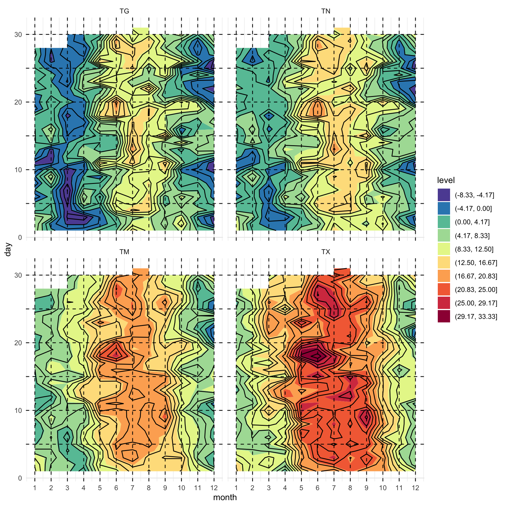
A.3 Analyse von Anzahlen in zwei Gruppen
In dieser sehr simplen Analyse haben wir zwei Gruppen vorliegen. Die Gruppe 1 ist hat zwei Level oder Behandlungen abgekürzt mit I und II. Die Gruppe 2 hat insgesamt vier Level oder eben Behandlungen, die wir mit A, B, C und D bezeichnen. Wir haben jetzt für die jeweiligen Kombinationen auf dem Feld etwas gezählt. Wir haben also für jede dieser Kombinationen nur eine Zahl. Es ergbit sich somit die folgende Matrix an Zahlen.
rel_mat <- matrix(c(45, 14, 4, 0,
25, 32, 5, 1), nrow = 2, byrow = TRUE,
dimnames = list(c("I", "II"), c("A", "B", "C", "D")))
rel_mat A B C D
I 45 14 4 0
II 25 32 5 1Nun können wir den \(\mathcal{X}^2\)-Test nutzen, um zu testen, ob die Zahlen in der Matrix bzw. auf unseren Feld gelcihverteilt sind. Die Nullhypothese lautet, dass es keinen Zusammenhang zwischen der Gruppe 1 und der Gruppe 2 auf dem Feld gibt. Die Zahlen sind also rein zufällig in dieser Anordnung.
chisq.test(rel_mat)
Pearson's Chi-squared test
data: rel_mat
X-squared = 13.8689, df = 3, p-value = 0.0030892Wir erhalten einen sehr kleinen \(p\)-Wert mit \(0.003\). Wir können daher die Nullhypothese ablehnen, da der \(p\)-Wert kleiner ist als das Signifikanzniveau \(\alpha\) mit 5%. Wir haben ein signifikantes Ergebnis. Wir können von einen Zusamenhang zwischen den beiden Gruppen ausgehen.
Mit Cramers V können wir auch noch die Effektstärke für einen \(\mathcal{X}^2\)-Test berechnen.
cramers_v(rel_mat) Cramer's V (adj.) | 95% CI
--------------------------------
0.29 | [0.00, 1.00]
- One-sided CIs: upper bound fixed at [1.00].Der Effekt ist mit \(0.33\) nicht besonders stark. Du kannst Cramers V wie die Korrelation interpretieren. Ein V von 0 bedeutet keinen Zusammenhang und ein V von 1 einen maximalen Zusammenhang. Wir wollen uns die Daten dann nochmal in einer Abbidlung anschauen. Dafür müssen wir die Matrix erstmal in einen Datensatz umwandeln und die Gruppen zu Faktoren machen.
plot_tbl <- rel_mat %>%
as_tibble(rownames = "group1") %>%
gather(A:D, key = "group2", value = "value") %>%
mutate(group1 = as_factor(group1),
group2 = as_factor(group2))In Abbildung A.2 sehen wir die Matrix der Zähldaten für die beiden Gruppen nochmal visualisiert. Beim betrachten fällt auf, dass die beiden Level C und D kaum Zähldaten enthalten. Hier wäre zu überlegen die beiden Level aus der Analyse herauszunehmen und einen klassischen \(\mathcal{X}^2\)-Test auf einer 2x2 Kreuztabelle zu rechnen.
ggplot(plot_tbl, aes(x = group2, y = value, fill = group1)) +
theme_bw() +
geom_bar(stat = "identity", position = position_dodge()) +
labs(x = "Gruppe 2", y = "Anzahl", fill = "Gruppe 1") +
scale_fill_okabeito() 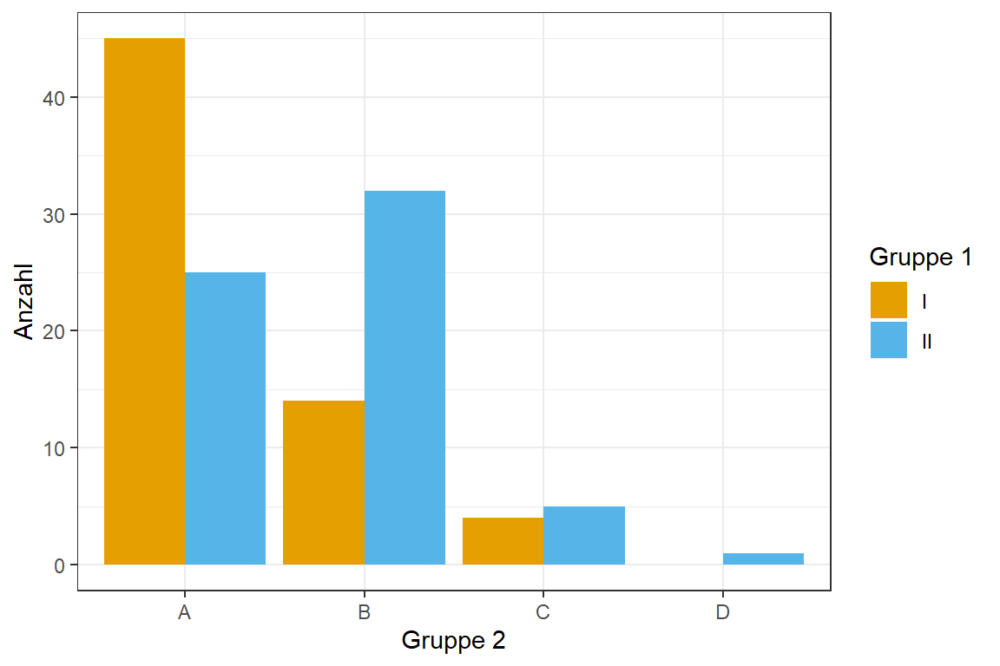
A.4 Auswertung zweifaktorielle ANOVA mit Interaktion
Hier kommt jetzt ein schönes Beispiel für eine Auswertung von einem dreifaktoriellen Design mit einer ANOVA. Passenderweise haben wir auch einen Interaktionsterm vorliegen. Unser dreifaktoriellen Design ist auch kein echtes dreifaktorielles Design. Wir müssen uns hier entscheiden, welcher der zwei Blockfaktoren nun unsere Wiederholung sein soll. Aber schreiben wir erstmal unser Modell auf, bevor wir das Modell mit Inhalt füllen.
\[ y \sim f_1 + b_1 + b_2 \]
In unserem Beispiel schauen wir uns das Pflanzenwachstum growth in einer Klimakammer mit verschiedenen Belichtungsstufen light_intensity sowie der Position der Pflanze in der Lichtkammer. Die Pflanze hat eine Position im rack und dann im layer. So ergibt sich dann für uns folgendes ausgeschriebenes Modell.
\[ growth \sim light\_intensity + layer + rack \]
In dieser Form wird unser Modell aber leider nicht funktionieren. Wir hätten dann keine Wiederholungen mehr. Jede Pflanze würe dann exakt durch eine Faktorkombination beschrieben. Wir sehen gleich das Problem visualisiert. Vorher müssen wir uns aber einmal die Daten einlesen und eine Menge Faktoren erschaffen. Achtung, das Erschaffen der Faktoren ist hier sehr wichtig! Im Orginaldatensatz stehen nur Zahlen für die Faktoren. Wir kriegen dann ein echtes Problem.
In der Tabelle A.1 sehen wir nochmal einen Ausschnitt aus den Daten.
| rack | layer | light_intensity | growth |
|---|---|---|---|
| left | 1st | low | 17.1 |
| left | 1st | low | 14.9 |
| left | 1st | low | 10.3 |
| left | 1st | low | 23.5 |
| left | 1st | low | 0.3 |
| left | 1st | low | 3.6 |
| … | … | … | … |
| right | 3rd | low | 19.5 |
| right | 3rd | low | 25.9 |
| right | 3rd | low | 35.5 |
| right | 3rd | low | 44.1 |
| right | 3rd | low | 10.7 |
| right | 3rd | low | 18.3 |
Nachdem wir die Daten eingelesen haben, schauen wir uns den Sachverhalt einmal für die drei Faktoren über die Level der einzelnen Faktoren an. Wir nutzen dafür die Funktion datasummary_crosstab() aus dem R Paket modelsummary. Wir können uns hier die Anzahl der Beobachtungen je Faktorlevelkombination einmal anschauen.
datasummary_crosstab(light_intensity ~ layer * rack, data = light_tbl,
statistic = NULL)| light_intensity | left | middle | right | left | middle | right | left | middle | right |
|---|---|---|---|---|---|---|---|---|---|
| low | 6 | 0 | 0 | 0 | 6 | 0 | 0 | 0 | 6 |
| mid | 0 | 0 | 6 | 6 | 0 | 0 | 0 | 6 | 0 |
| high | 0 | 6 | 0 | 0 | 0 | 6 | 6 | 0 | 0 |
Wir sehen eine Menge Nullen. Das heißt, dass diese Faktorlevelkombinationen keine Beobachtungen haben. Dann können wir auch über diese Kombinationen keine Aussage treffen. Wenn wir entweder rack oder layer entfernen, sieht die Sache schon besser aus. Wir haben jetzt alle Faktorlevelkombinationen belegt. Wir müssen uns dann nur noch entscheiden, welchen Faktor wir ins Modell nehmen wollen.
datasummary_crosstab(light_intensity ~ layer, data = light_tbl,
statistic = NULL)
datasummary_crosstab(light_intensity ~ rack, data = light_tbl,
statistic = NULL)| light_intensity | 1st | 2nd | 3rd |
|---|---|---|---|
| low | 6 | 6 | 6 |
| mid | 6 | 6 | 6 |
| high | 6 | 6 | 6 |
| light_intensity | left | middle | right |
|---|---|---|---|
| low | 6 | 6 | 6 |
| mid | 6 | 6 | 6 |
| high | 6 | 6 | 6 |
Das R Paket modelsummary bietet hier eine sehr große Auswahl an tollen Funktionen an um seine Daten übersichtlich zu gestalten.
Für die Entscheidung welcher der beiden Faktoren rack oder layer mit ins Modekll soll, schauen wir uns einmal die Boxplots für die jeweiligen Fakoten an. In Abbildung A.3 sehen wir einmal die Boxplots aufgeteilt nach rack.
ggplot(light_tbl, aes(light_intensity, growth, fill = rack)) +
theme_bw() +
geom_boxplot() +
scale_fill_okabeito()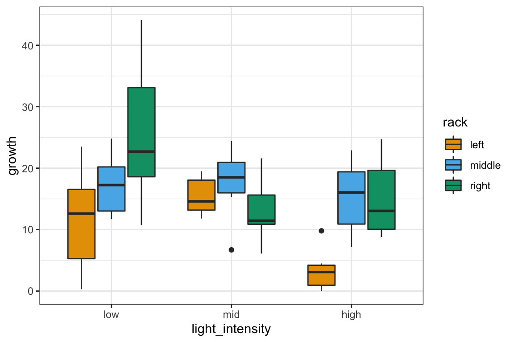
rack.Und wir sehen schon, da stimmt was nicht. Die Annahme der ANOVA ist, dass sich der Trend im ersten Faktorlevel für alle im Faktor über die anderen Faktoren gleicht. Das liest sich kryptisch, aber verdeutlichen wir es mal. Im Level low steigen alle Level des Faktors rack an. Wenn keine Interaktion vorliegen würde, dann müssten dieses Muster in dem Level mid und high ebenfalls annährend zu beobachten sein. Tut es aber nicht. Wir haben eine Interaktion zwischen light_intensity und rack visuell bestätigt.
ggplot(light_tbl, aes(light_intensity, growth, fill = layer)) +
theme_bw() +
geom_boxplot() +
scale_fill_okabeito()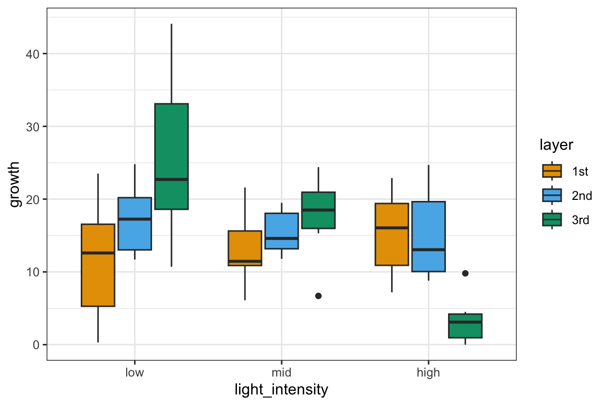
layer.Dieses wirre Muster sehen wir dann auch in Abbildung A.4. Hier passen die Trends des Faktors layer über die Faktorlevel low, mid und high auch wieder nicht. Schauen wir uns jetzt nochmal die ganze Sache aufgeteilt nach rack und layer an. Vielelicht werden wir dann etwas schlauer oder das Problem wird noch klarer.
ggplot(light_tbl, aes(light_intensity, growth, fill = rack)) +
theme_bw() +
geom_boxplot() +
facet_wrap(~ layer) +
scale_fill_okabeito()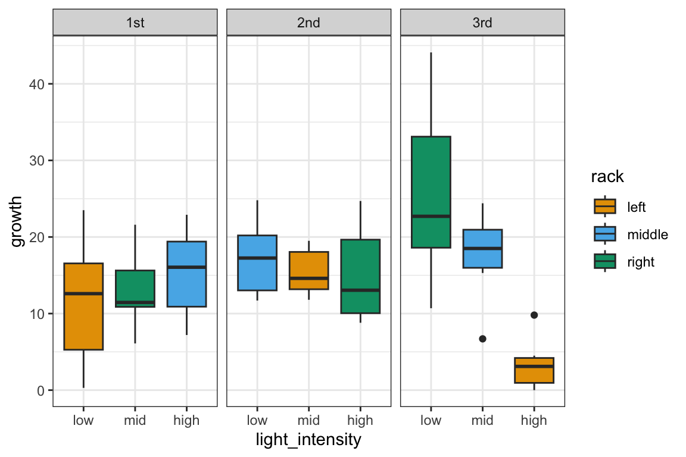
rack und layer.Jetzt sehen wir etwas mehr. Im 1st Level liegen alle rack-Level auf einer Ebene. Ebenso liegen alle rack-Level auf einer Ebene im 2n Level. Das ganze Problem der Interaktion entsteht im 3rd Level. Hier ging etwas drunter und drüber im Pflanzenwachstum. Wir wissen jetzt, dass das dritte Layer anscheinend defekt war oder irgendwas dort mit den Racks nicht gestimmt hat.
Wir könnten jetzt das dritte Layer aus der Analyse werfen. Das wäre aber nur eine Möglichkeit. Wenn wir das tuen würden, dann würde wir auch die Interaktion los werden. Das wollen wir hier aber nicht, wir ziehen jetzt die Analyse einmal mit der Interaktion durch. Dafür bauen wir uns jetzt das lineare Modell und schauen uns einmal die ANOVA an.
fit_1 <- lm(growth ~ light_intensity + layer + light_intensity:layer,
data = light_tbl)
fit_1 %>% model_parameters()Parameter | Coefficient | SE | 95% CI | t(45) | p
---------------------------------------------------------------------------------------------
(Intercept) | 11.62 | 2.80 | [ 5.97, 17.26] | 4.14 | < .001
light intensity [mid] | 1.43 | 3.96 | [ -6.55, 9.42] | 0.36 | 0.719
light intensity [high] | 3.70 | 3.96 | [ -4.28, 11.68] | 0.93 | 0.356
layer [2nd] | 5.68 | 3.96 | [ -2.30, 13.67] | 1.43 | 0.159
layer [3rd] | 14.05 | 3.96 | [ 6.07, 22.03] | 3.54 | < .001
light intensity [mid] × layer [2nd] | -3.33 | 5.61 | [-14.62, 7.96] | -0.59 | 0.555
light intensity [high] × layer [2nd] | -5.92 | 5.61 | [-17.21, 5.37] | -1.06 | 0.297
light intensity [mid] × layer [3rd] | -9.60 | 5.61 | [-20.89, 1.69] | -1.71 | 0.094
light intensity [high] × layer [3rd] | -25.90 | 5.61 | [-37.19, -14.61] | -4.62 | < .001Erstmal sehen wir an den Modellparameters, dass hier wieder etwas nicht stimmt. Wir würden erwarten, dass der Effekt des Layers immer gleich ist. Hier ist der Effekt von dem 2nd Layer zu dem 3rd Layer fast dreimal so stark. Und eigentlich sollten die Layer den gleichen Effekt haben. Nämlich eigentlich keinen oder einen Effekt weit unter dem von der Lichtintensität. Das Layer ist eine technische Komponente.
fit_1 %>% anova() %>% model_parameters()Parameter | Sum_Squares | df | Mean_Square | F | p
----------------------------------------------------------------------
light_intensity | 433.15 | 2 | 216.57 | 4.60 | 0.015
layer | 70.92 | 2 | 35.46 | 0.75 | 0.477
light_intensity:layer | 1138.80 | 4 | 284.70 | 6.04 | < .001
Residuals | 2120.85 | 45 | 47.13 | |
Anova Table (Type 1 tests)Wir sehen die visuelle Interaktion auch in der ANOVA Ausgabe als hoch signifikanten Term light_intensity:layer mit dem \(p\)-Wert \(<0.001\). Im Anschluss rechnen wir jetzt die paarweisen Vergleiche mit der Funktion emmeans(). Mit dem | geben wir an, dass wir die paarweisen Vergleiche für die Level von light_intensity getrennt für die Level vom layer rechnen wollen. Wenn du keine Adjustierung des \(\alpha\)-Niveaus für die multiplen Vergleiche möchtest, dann wähle einfach die Option adjust = "none". Wir nutzen dann die Ausgabe nicht direkt sondern werden noch die Ausgabe etwas aufhübschen.
comp_1_obj <- fit_1 %>%
emmeans(specs = ~ light_intensity | layer) %>%
contrast(method = "pairwise", adjust = "bonferroni") In dem Objekt comp_1_obj sind eine Menge Informationen enthalten. Ich kürze mir immer die Informationen und sortiere nochmal die Ergebnisse. Wir erhalten dann eine saubere Wiedergabe.
comp_1_obj %>%
summary %>%
as_tibble %>%
select(contrast, layer, p.value) %>%
mutate(p.value = format.pval(p.value, eps = 0.001, digits = 2))# A tibble: 9 × 3
contrast layer p.value
<fct> <fct> <chr>
1 low - mid 1st 1.0000
2 low - high 1st 1.0000
3 mid - high 1st 1.0000
4 low - mid 2nd 1.0000
5 low - high 2nd 1.0000
6 mid - high 2nd 1.0000
7 low - mid 3rd 0.1355
8 low - high 3rd <0.001
9 mid - high 3rd 0.0028 Nach der Adjustierung für die multiplen Vergleiche haben wir nur noch einen Effekt in dem 3rd Layer. Sonst haben die Lichtintensitäten keinen Einfluss auf die Wuchshöhe der Pflanzen. Da wir wissen, dass das 3rd Layer auch das defekte Layer war, sehen wir hier schon, dass wir keinen wirklichen Effekt durch das Licht vorliegen haben. Alles was wir gefunden haben, ist eben ein defektes 3rd Layer.
Die 95% Konfidenzintervalle erhalten wir mit der Funktion confint(). Die Ergebnisse sind natürlich die gleichen. Wir sehen wieder keinen Unterschied zwischen den Lichtintensitäten außer in dem 3rd Layer.
ci_obj <- comp_1_obj %>%
confint() %>%
as_tibble() %>%
select(contrast, layer, estimate, conf.low = lower.CL, conf.high = upper.CL)
ci_obj# A tibble: 9 × 5
contrast layer estimate conf.low conf.high
<fct> <fct> <dbl> <dbl> <dbl>
1 low - mid 1st -1.43 -11.3 8.42
2 low - high 1st -3.70 -13.6 6.16
3 mid - high 1st -2.27 -12.1 7.59
4 low - mid 2nd 1.90 -7.96 11.8
5 low - high 2nd 2.22 -7.64 12.1
6 mid - high 2nd 0.317 -9.54 10.2
7 low - mid 3rd 8.17 -1.69 18.0
8 low - high 3rd 22.2 12.3 32.1
9 mid - high 3rd 14.0 4.18 23.9 In der Abbildung A.6 sehen wir dann die berechneten 95% Konfidenzintervalle nochmal visualisiert. Wenn wir einen Effekt haben, dann im 3rd Layer. In den restlichen 95% Konfidenzintervallen ist die Null mit enthalten, wir können also die Nullhypothese auf Gleichheit des Gruppenvergleiches nicht ablehnen.
ggplot(ci_obj, aes(contrast, y=estimate, ymin=conf.low, ymax=conf.high,
color = layer, group = layer)) +
geom_hline(yintercept=0, linetype="11", colour="grey60") +
geom_errorbar(width=0.1, position = position_dodge(0.5)) +
geom_point(position = position_dodge(0.5)) +
scale_color_okabeito() +
coord_flip() +
theme_classic()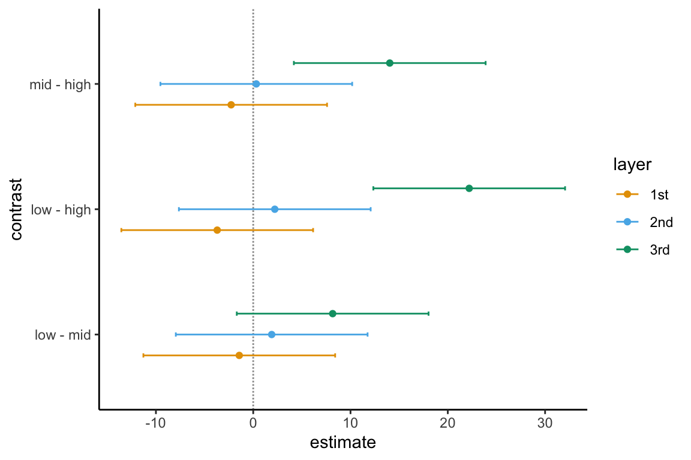
layer.Neben der Darstellung mit 95% Konfidenzintervallen ist auch die Darstellung mit dem compact letter display sehr beliebt. Wir nutzen dafür dann die Funktion cld(). Wir adjustieren uns wieder die Vergleiche nach Bonferroni. Im Weiteren trenne wir die Vergleiche auch wieder nach den Leveln für den Faktor layer auf.
cld_obj <- fit_1 %>%
emmeans(specs = ~ light_intensity | layer) %>%
cld(Letters = letters, adjust = "bonferroni")
cld_objlayer = 1st:
light_intensity emmean SE df lower.CL upper.CL .group
low 11.62 2.8 45 4.65 18.6 a
mid 13.05 2.8 45 6.08 20.0 a
high 15.32 2.8 45 8.35 22.3 a
layer = 2nd:
light_intensity emmean SE df lower.CL upper.CL .group
high 15.08 2.8 45 8.11 22.1 a
mid 15.40 2.8 45 8.43 22.4 a
low 17.30 2.8 45 10.33 24.3 a
layer = 3rd:
light_intensity emmean SE df lower.CL upper.CL .group
high 3.47 2.8 45 -3.50 10.4 a
mid 17.50 2.8 45 10.53 24.5 b
low 25.67 2.8 45 18.70 32.6 b
Confidence level used: 0.95
Conf-level adjustment: bonferroni method for 3 estimates
P value adjustment: bonferroni method for 3 tests
significance level used: alpha = 0.05
NOTE: If two or more means share the same grouping symbol,
then we cannot show them to be different.
But we also did not show them to be the same. Wir sehen wieder, dass wir nur in dem 3rd Layer Buchstabenunterschiede haben. Daher haben wir auch nur im 3rd Layer signifikante Ergebnisse. Wichtig ist, dass wir die Buchstaben nur pro Level des Layers vergleichen können, aber auf keinen Fall über die Layer hinweg. Das geht dann leider nicht. Die Ausgabe der Funktion emmeans() schlägt noch andere Darstellungsformen für die Vergleiche vor, du kannst gerne einmal die Funktionen pairs(), pwpp() oder pwpm() ausprobieren und schauen, ob dir die Visualisierung mehr sagt. Im Kapitel 31.5 gehe ich nochmal auf die verschiedene Darstellungsformen in emmeans ein.
Wenn wir das compact letter display mit deinem Barplot verbinden wollen, müssen wir uns etwas strecken. Zuerst sortieren wir die Ausgabe von cld_obj wieder in die korrekte Reihenfolge der Faktorenlevel. Dann können wir die Spalte .group direkt in ggplot() verwenden.
cld_sort_obj <- cld_obj %>%
as_tibble() %>%
select(light_intensity, layer, .group) %>%
arrange(layer, light_intensity)In Abbildung A.7 sehen wir die Ausgabe des Barplots für die Daten und dann an die Balken geschrieben das compact letter display. Wichtig ist hier, dass die Buchstaben immer nur für ein Layer gelten. Wir können wegen der Interaktion nicht die Layer untereinander mit den Buchstaben vergleichen. Wir sehen wiederum, dass wir keine relevanten signifikanten Ergebnisse aus dem Experiment mitnehmen können.
stat_tbl <- light_tbl %>%
group_by(light_intensity, layer) %>%
summarise(mean = mean(growth),
sd = sd(growth))
ggplot(stat_tbl, aes(x = layer, y = mean, group = light_intensity,
fill = light_intensity)) +
geom_bar(stat = "identity", position = position_dodge()) +
geom_errorbar(aes(ymin = mean-sd, ymax = mean+sd),
width = 0.2, position = position_dodge(0.9)) +
annotate("text",
x = c(0.7, 1, 1.3, 1.7, 2, 2.3, 2.7, 3, 3.3),
y = c(22, 21, 23, 24, 20, 23, 39, 25, 9),
label = pluck(cld_sort_obj, ".group")) +
theme_bw() +
labs(fill = "Behandlung") +
scale_fill_okabeito()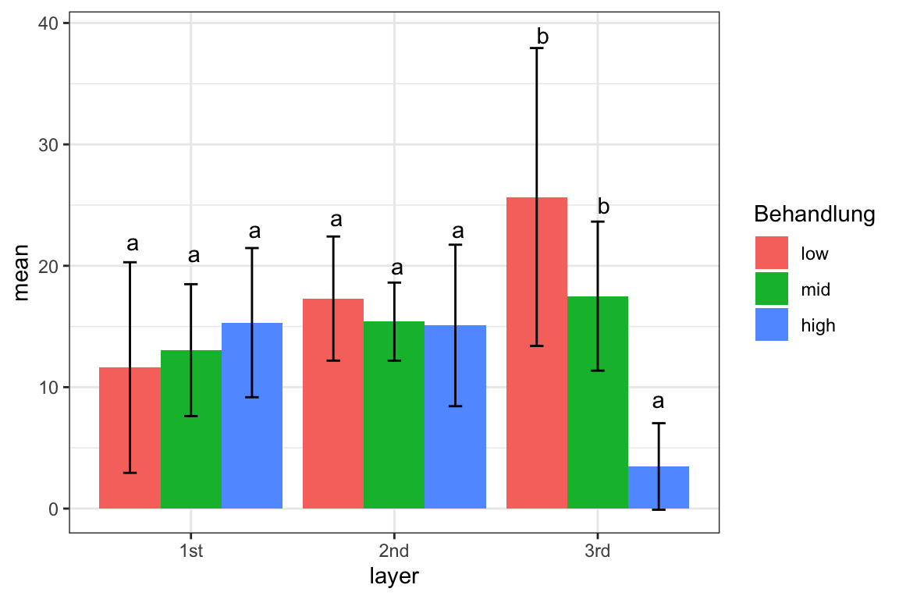
A.5 Multiples Testen mit Games Howell Test
In diesem Abschnitt wollen wir einen einfaktoriellen Datensatz auswerten. Das heißt, wir haben eine Spalte mit unseren Variantenfaktor mit 11 Leveln und dann aber auch neun Outcomes. Wir müssen also für alle neun Outcomes einen Test rechnen. Dementsprechend bauen wir uns Liste in R. In jedem der Listeneinträge ist nur die Spalte für die Variante und einem Outcome. Wir haben dann also am Ende eine Liste mit neun Listeneinträgen und pro Liste einen Datensatz mit zwei Spalten. Wir brauchen noch das R Paket multcompView für die Darstellung des compact letter display und das R Paket rstatix für die Anwendung der R Funktion games_howell_test(). Wir gehen nämlich von einem normalverteilten Outcome mit Varianzheterogenität aus. Das nehmen wir für jedes Outcome an, dann können wir immer das Gleiche auf den Daten rechnen.
Also erstmal die Daten einlesen, dann die Varianten bilden und die Zahlen wieder auf eine angemessene Länge runden. Ich nehme da immer auf Zweikommastellen, aber das hat hier eher mit der Übersicht zu tun. Gerne kannst du da auch mehr Kommastellen zulassen.
soil_tbl <- read_excel("data/soil_1fac_data.xlsx") %>%
mutate(variante = str_c(variante, "_", amount),
variante = as_factor(variante),
across(where(is.numeric), round, 2)) %>%
select(-amount)In der Tabelle A.2 sehen wir nochmal einen Ausschnitt aus den Daten. Wir schmeißen amount aus den Daten, da die Spalte dann in der Variante aufgeht.
| variante | fe | k | no3 | no4 | mg | ca | drymatter | freshweight | height |
|---|---|---|---|---|---|---|---|---|---|
| Holzfasern_0 | 0.26 | 3.7 | 3.28 | 4.1 | 0.43 | 0.45 | 11.24 | 95.3 | 22.17 |
| Holzfasern_0 | 0.33 | 3.66 | 3.24 | 4.05 | 0.44 | 0.47 | 11.48 | 86.15 | 23 |
| Holzfasern_0 | 0.27 | 3.83 | 3.64 | 4.3 | 0.48 | 0.47 | 11.11 | 86.93 | 28.17 |
| Holzfasern_0 | 0.31 | 3.66 | 3.24 | 3.75 | 0.31 | 0.43 | 11.95 | 89.68 | 26.83 |
| Torf_30 | 0.46 | 2.89 | 5.02 | 4.95 | 0.37 | 0.39 | 11.21 | 70.82 | 23.83 |
| Torf_30 | 0.37 | 3.41 | 9.44 | 5.01 | 0.49 | 0.42 | 11.29 | 66.23 | 22.33 |
| … | … | … | … | … | … | … | … | … | … |
| Aufgefasertes_30 | 0.57 | 9.65 | 18.98 | 6.5 | 0.33 | 0.29 | 10.28 | 73.8 | 22 |
| Aufgefasertes_30 | 0.78 | 27.65 | 16.96 | 7 | 0.34 | 0.32 | 13.91 | 74.18 | 22.5 |
| Aufgefasertes_50 | 1.78 | 22.91 | 59.38 | 8 | 0.34 | 0.25 | 13.61 | 45.58 | 18.67 |
| Aufgefasertes_50 | 1.3 | 36.06 | 58.02 | 8 | 0.35 | 0.25 | 9.62 | 37.93 | 20 |
| Aufgefasertes_50 | 1.08 | 3.66 | 56.85 | 7.99 | 0.32 | 0.25 | 9.5 | 43.98 | 18.67 |
| Aufgefasertes_50 | 1.06 | 3.75 | 44.39 | 7.99 | 0.39 | 0.24 | 10.67 | 35.48 | 19.67 |
Im Folgenden werden wir immer wieder die Funktion map() aus dem R Paket purrr nutzen um auf Listen zu rechnen. Die Funktion map() erlaubt auf allen Listeneinträgen die gleiche Funktion durchzuführen. Das macht es natürlich sehr angenehm, wenn wir immer das gleiche Modell auf unsere Daten rechnen wollen.
Wir immer gibt es auch Tutorien im Netz, wenn du mehr über purrr::map() erfahren willst. Es gibt das
purrr tutorial und die Zusammenfassung in Apply functions with purrr::CHEAT SHEET.
Als erstes müssen wir aber unsere Daten in das Long-Format kriegen. Dann können wir die Daten nach dem Outcome in der Spalte key die Daten in neuen Listeneinträge aufspalten. Warum neun? Wir haben eben neun Outcomes. Dann haben wir auch neun Listeneinträge. In jedem Listeneintrag ist die Spalte variante und die Spalte value. Der Name des Listeneintrags enthält dann den Namen des Outcomes. Mit dem .x übergeben wir iterativ jeden Listeneintrag in die Funktion select().
soil_lst <- soil_tbl %>%
gather(key, value, fe:height) %>%
split(.$key) %>%
map(~select(.x, -key))Schauen wir uns von jedem Listeneintrag einmal die ersten beiden Zeilen an. Das machen wir auch wieder mit map() indem wir die Funktion head() auf jedem Listeneintrag ausführen.
soil_lst %>%
map(~head(.x, 2))$ca
# A tibble: 2 × 2
variante value
<fct> <dbl>
1 Holzfasern_0 0.45
2 Holzfasern_0 0.47
$drymatter
# A tibble: 2 × 2
variante value
<fct> <dbl>
1 Holzfasern_0 11.2
2 Holzfasern_0 11.5
$fe
# A tibble: 2 × 2
variante value
<fct> <dbl>
1 Holzfasern_0 0.26
2 Holzfasern_0 0.33
$freshweight
# A tibble: 2 × 2
variante value
<fct> <dbl>
1 Holzfasern_0 95.3
2 Holzfasern_0 86.2
$height
# A tibble: 2 × 2
variante value
<fct> <dbl>
1 Holzfasern_0 22.2
2 Holzfasern_0 23
$k
# A tibble: 2 × 2
variante value
<fct> <dbl>
1 Holzfasern_0 3.7
2 Holzfasern_0 3.66
$mg
# A tibble: 2 × 2
variante value
<fct> <dbl>
1 Holzfasern_0 0.43
2 Holzfasern_0 0.44
$no3
# A tibble: 2 × 2
variante value
<fct> <dbl>
1 Holzfasern_0 3.28
2 Holzfasern_0 3.24
$no4
# A tibble: 2 × 2
variante value
<fct> <dbl>
1 Holzfasern_0 4.1
2 Holzfasern_0 4.05Jetzt geht kannst du einmal map() in seiner vollen Schönheit sehen. Wir rechnen auf jeden Listeneintrag einmal den Games Howell Test. Dann steht in jedem der Listeneinträge das Ergebnis des Games Howell Test. Wir müssen dann noch die Spalte contrast aus der Ausgabe des Games Howell Test abändern, damit wir das compact letter display über die Funktion multcompLetters() nutzen können. Dann brauchen wir die adjustierten p-Werte und den Kontrast. Beides schieben wir dann in die Funktion multcompLetters() und lassen uns nur die Buchstaben des compact letter display wiedergeben. Am Ende kleben wir noch alle Einträge der einzelnen Listen mit der Funktion bind_rows() zu einem Datensatz zusammen. Vermutlich musst du die einzelnen Funktion selber mal Schritt für Schritt ausführen. Aber das hier war ja auch jetzt mal fortgeschrittene Programmierung.
soil_lst %>%
map(~games_howell_test(value ~ variante, data = .x)) %>%
map(~mutate(.x, contrast = str_c(.x$group1, "-", .x$group2))) %>%
map(~pull(.x, p.adj, contrast)) %>%
map(~multcompLetters(.x)$Letters) %>%
bind_rows(.id = "outcome") # A tibble: 9 × 12
outcome Holzfase…¹ Torf_30 Kompo…² Kompo…³ Kompo…⁴ Gehäc…⁵ Gehäc…⁶ Gehäc…⁷
<chr> <chr> <chr> <chr> <chr> <chr> <chr> <chr> <chr>
1 ca ab ab ab cd e abc a b
2 drymatter a a ab ab ab ab ab b
3 fe a abc ab abc bc a abc abc
4 freshweight a b ac abcdef de abc bcd f
5 height abcde abc abcde acd ade abcd abcde e
6 k a a ab ab ab ab ab ab
7 mg ab ab a a a ab ab b
8 no3 a ab ab abcd abc a abc abc
9 no4 a b bcdef c d ae cf c
# … with 3 more variables: Aufgefasertes_10 <chr>, Aufgefasertes_30 <chr>,
# Aufgefasertes_50 <chr>, and abbreviated variable names ¹Holzfasern_0,
# ²Kompostiertes_10, ³Kompostiertes_30, ⁴Kompostiertes_50, ⁵Gehäckseltes_10,
# ⁶Gehäckseltes_30, ⁷Gehäckseltes_50Wie du dann mit dem compact letter display weiterarbeitest und interpretierst, findest du dann im Kapitel 31.7 über das compact letter display für den Games Howell Test. Hier ist erstmal Schluss, sonst wird hier alles sehr wiederholend.
A.6 Wurzelqualität in einem zweifaktoriellen Design
Sehr häufig haben wir es auch in den Agrarwissenschaften mit Boniturnoten auf der Likert-Skala zu tun. Das heißt wir haben ein Outcome \(y\) mit Noten zwischen 1 und 9. Die ganzen Beobachtungen haben wir dann meist noch irgendwie in einem Block wiederholt. Neben den Problemen eine gute und richtige Bonitur praktisch durchzuführen, ist natürlich die Normalverteilung für das Outcome der Noten nicht gegeben. Wir könnten hier zum einen mit einem paarweisen Wilcoxon Rangsummentest ran oder aber wir nutzen die Funktion clm() aus dem R Paket ordnial für die Schätzung der Gruppenunterschiede. Wir nehmen hier mal die Funktion clm() da wir auch den Block mit ins Modell nehmen können.
Zuerst laden wir wieder die Daten. Dabei müssen wir dann noch die Notenspalte grade einmal als numerisch lassen und einmal in einen Faktor mutieren. Wir brauchen ein Faktor für die Funktion clm() aber eine numerische Variable für die Funktion ggplot(). Deshalb eben die Noten in einer doppelten Spalte.
root_tbl <- read_excel("data/root_2fac_data.xlsx") %>%
mutate(treatment = str_c(treatment, "_", fert, "_", mixture)) %>%
select(treatment, block, grade) %>%
mutate(grade_fctr = as_factor(grade),
block = as_factor(block))In Abbildung A.8 sehen wir einmal die Abbildung der Noten. Wie immer sind über so viele Behandlungsstufen dann die Abbildungen sehr unübersichtlich. Ich nutze hier einen Dotplot, da du dann die einzelnen Beobachtungen besser sehen kannst. Wir sehen aber, dass es Effekte zwischen den Behandlungen gibt.
ggplot(root_tbl, aes(treatment, grade, fill = block)) +
theme_bw() +
geom_dotplot(binaxis = "y", stackdir='center',
position=position_dodge(0.6), dotsize = 0.75) +
scale_y_continuous(breaks = 1:9, limits = c(1,9)) +
scale_fill_okabeito() +
theme(axis.text.x = element_text(angle = 45, hjust=1))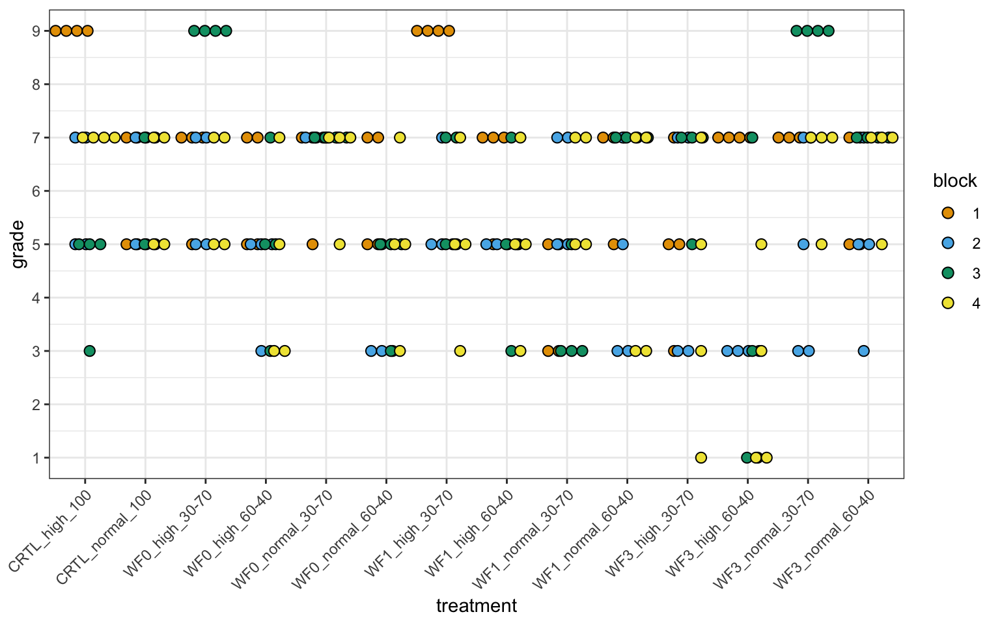
Wir könnten jetzt einen Friedman Test rechen. Der Friedman Test ist das Äquivalent zur einer zweifaktorielle ANOVA. Wenn wir aber die Funktion friedman.test() durchführen sehen wir, dass wir kein complete block design vorliegen haben. Wir können hier also einen Friedman Test nicht rechnen.
friedman.test(grade_fctr ~ treatment | block, root_tbl)Error in friedman.test: not an unreplicated complete block design
Da es eben mit dem Friedman Test nicht geht, nutzen wir Cumulative Link Models mit der Funktion clm(). Die Modelle erlauben ein ordinales Outcome zusammen mit einem multiplen linearen Modell zu schätzen. Das ist was wir wollen, damit können wir den Block mit berücksichtigen. Dann geben wir mit threshold = "symmetric" noch an, dass die Abstände in unserem Outcome \(y\) symmetrisch sind. Die Abstände zwischen den Notenstufen sind ja immer gleich groß.
clm_fit <- clm(grade_fctr ~ treatment + block, data = root_tbl,
threshold = "symmetric")Mit dem Fit des Modells können wir dann auch eine ANOVA rechnen, um zu schauen, ob wir überhaupt einen signifikanten Effekt unser Behandlung vorliegen haben. Das haben wir, zum einen ist die Behandlung signifikant und leider auch der Block. Das ist natürlich nicht so schön. Eine Interaktion können wir nicht rechnen, da wir zu wenig Fallzahl vorliegen haben.
anova(clm_fit) %>%
model_parameters()Parameter | Chi2 | df | p
-------------------------------
treatment | 54.46 | 13 | < .001
block | 24.64 | 3 | < .001
Anova Table (Type 1 tests)Nun nutzen wir das Modell einmal um uns die compact letters wiedergeben zu lassen. Dafür nutzen wir wieder die Funktion emmeans() aus dem R Paket emmeans. Am Ende sortieren wir nochmal nach der Behandlung und dann lassen wir uns nur die Behandlung und die Buchstaben wiedergeben. Wenn du mehr möchtest, kannst du auch im Kapitel über die Posthoc Tests oder der ordinalen logistischen Regression mehr Optionen anlesen.
clm_fit %>%
emmeans(~ treatment) %>%
cld(Letters = letters) %>%
arrange(treatment) %>%
select(treatment, .group) treatment .group
1 CRTL_high_100 cde
2 CRTL_normal_100 bcde
3 WF0_high_30-70 e
4 WF0_high_60-40 abcd
5 WF0_normal_30-70 cde
6 WF0_normal_60-40 ab
7 WF1_high_30-70 bcde
8 WF1_high_60-40 abcde
9 WF1_normal_30-70 abc
10 WF1_normal_60-40 abcde
11 WF3_high_30-70 abcde
12 WF3_high_60-40 a
13 WF3_normal_30-70 de
14 WF3_normal_60-40 bcdeWenn wir für den Block mit adjustieren wollen würden, können wir den Aufruf wie folgt ändern emmeans(~ treatment | block). Leider erhalten wir dann in der df Spalte den Eintrag Inf für eng. infinity und das ist nie ein gutes Zeichen. Wir haben auch die sich immer gleich wiederholende Abfolge der compact letters. Also macht es mehr kaputt als heile und wir lassen das Modell so wie es ist. Wir nehmen den Block als reine Wiederholung mit in das Modell rein.
A.7 Wachstum nach Rückschnitt mit Messwiederholung
Du findest auf YouTube Spielewiese in R - Teil 04.0 - Messwiederholungen einlesen und Outcomes korrelieren die Auswertung einmal als Video. Ich werde zwar alles nochmal hier als Text aufschreiben, aber manchmal ist das Sehen und Hören dann einfacher.
In diesem Beispiel haben vier Outcomes mit shoot, flower, leaf und fruit gemessen. Wir nehmen hier an, dass wir es bei dem Outcome shoot mit einer Pflanzenhöhe zu tun haben und bei den drei anderen Outcomes jeweils mit einer Anzahl. Wir haben jeweils drei Pflanzen in zwei Blöcken randomisiert. Darüber hinaus haben wir vier Behandlungen. Einmal schauen wir uns eine Kontrolle an sowie drei Arten von Rückschnitten. Die Fragestellung ist nun, wie sich die Behandlung durch die Rückschnitte auf die Outcomes auswirkt.
Wir lesen wieder als erstes die Daten ein. Bitte beachte, dass wir den Versuch an acht Terminen ausgewertet haben. Das heißt, wir haben an acht Terminen alle vier Outcomes gemessen. Dadurch ergeben sich immer vier Spalten mit dem Namen des Outcomes ergänzt um eine Zahl für den Messtermin. Wir nutzen noch die Funktion clean_names() um sicherzugehen, dass wir keine Leerzeichen mehr in den Spaltennamen haben.
cutting_raw_tbl <- read_excel("data/cutting_data.xlsx") %>%
clean_names()Nun müssen wir noch die Spalten shoot_1 bis zur letzten Spalte fruit_8 in drei Spalten verwandeln. In der einen Spalte rsp sollen nur die numerischen Messwerte stehen. In der Spalte week soll nur die Messwoche hinein und in die Spalte Outcome soll sich der Name der Spalte wiederfinden. Um diese Modifizierung der Daten zu erreichen, nutzen wir die Funktion pivot_longer(). Wir spalten die Namen der Spalten durch den Unterstrich _ in zwei neue Spalten outcome und week. Dann müssen wir noch die Daten sortieren und die Behandlung sowie die Blöcke in einen Faktor umwandeln. Damit wir später eine bessere Abbildung haben, verwandeln wir noch die Wochen in eine numerische Spalte.
cutting_tbl <- cutting_raw_tbl %>%
pivot_longer(cols = shoot_1:fruit_8,
names_to = c("outcome", "week"),
names_sep = "_",
values_to = "rsp") %>%
arrange(outcome, week, trt, block, rsp) %>%
mutate(block = as_factor(block),
trt = as_factor(trt),
outcome = as_factor(outcome),
week = as.numeric(week))Jetzt wollen wir für die Abbildung A.9 etwas andere Namen für unsere Outcomes. Dafür nutzen wir dann die Funktion recode() in der wir die Level eines Faktors umbenennen können. Nachdem wir das gemacht haben, stellen wir einmal die Verläufe der Outcomes über die Wochen getrennt für die Behandlungen und die Blöcke dar. Die Funktion stat_smooth() erlaubt uns einmal eine Gerade durch die Punkte zu legen.
cutting_plot_tbl <- cutting_tbl %>%
mutate(outcome = recode(outcome,
shoot = "Trieblänge",
flower = "Blütenanzahl",
leaf = "Blätteranzahl",
fruit = "Fruchtanzahl"))
cutting_plot_tbl %>%
ggplot(aes(week, rsp, color = trt, linetype = block)) +
theme_minimal() +
facet_wrap(~ outcome, scales = "free_y") +
geom_point() +
stat_smooth(se = FALSE) +
scale_color_okabeito()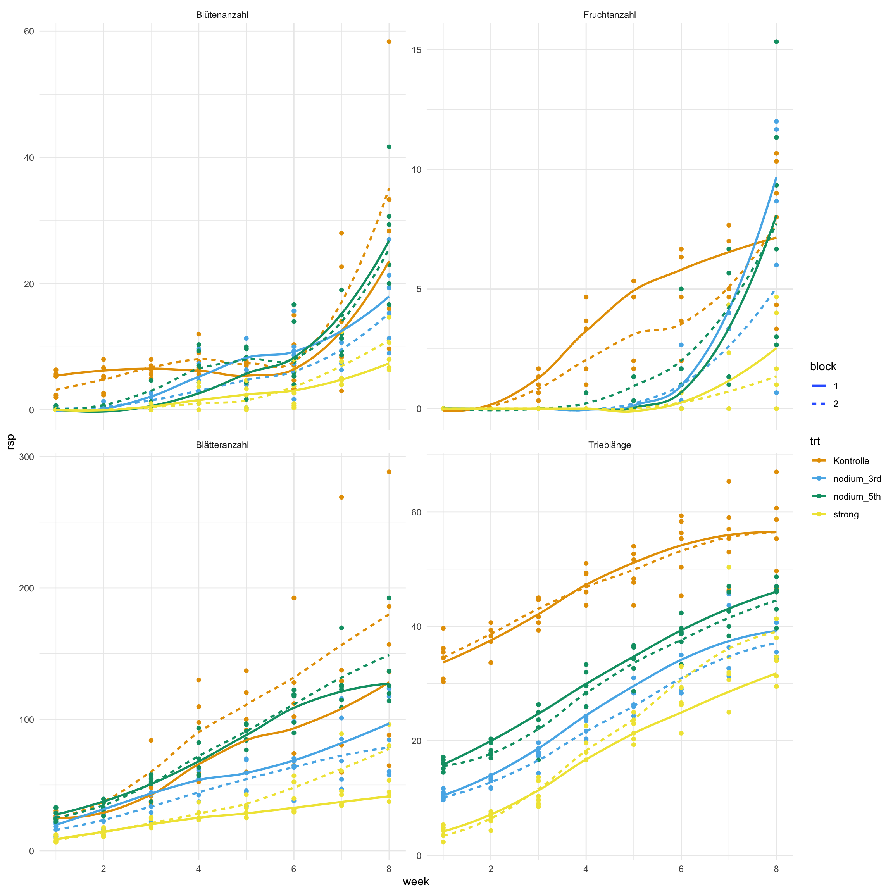
Wir wir erkennen können, sind die Blöcke ähnlich. Hier haben wir also gut randomisiert. Auch scheint keine gravierende Interaktion vorzuliegen. Die Abstände und der Anstieg ist über die Wochen relativ konstant. Wir werden uns am Ende auf die Woche acht konzentrieren, da wir an dem letzten Termin unsere multiplen Vergleiche rechnen wollen.
Häufig ist es so, dass wir dann noch einen Barplot wollen. Hier ist aber Vorsicht geboten. Ein Barplot mit Mittelwert und Standardabweichung macht eigentlich nur Sinn, wenn das Outcome normalverteilt ist. Sonst können schnell negative oder ungewollte Werte raus kommen. Immerhin haben wir hier mit flower, leaf und fruit drei Outcomes die als Zähldaten einer Poissonverteilung folgen.
Um die Mittelwerte für die Behandlungen getrennt für die Wochen zu berechnen, nutzen wir die Funktion group_by() um uns alle Paare von Behandlung und Woche zu bilden. Dann rechnen wir für jede dieser Paarungen dann den Mittelwert und die Standardabweichung aus. Wir mitteln aber hier über die Blöcke, um dann die Barplots überhaupt sinnvoll darstellen zu können.
In Abbildung A.10 sehen wir die Barplots. Wir zu erwarten erhalten wir bei den Zäldaten negatuve Werte durch den Fehlerbalken angezeigt. Die Streuung ist hier zu groß und so sind die Fehlerbalken auch negativ. Barplots sind keine gute Lösung für die Darstellung von Zähldaten durch den Mittelwert und die Standardabweichung. Da wären dann Boxplots besser. Aber es ist immer gut mal was zu zeigen, was dann auch nicht so gut geht, also hier einmal die Barplots.
ggplot(stat_tbl, aes(x = week, y = mean, group = trt, fill = trt)) +
geom_bar(stat = "identity", position = position_dodge()) +
geom_errorbar(aes(ymin = mean-sd, ymax = mean+sd),
width = 0.2, position = position_dodge(0.9)) +
theme_bw() +
labs(fill = "Behandlung") +
facet_wrap(~ outcome, scales = "free_y") +
scale_fill_okabeito()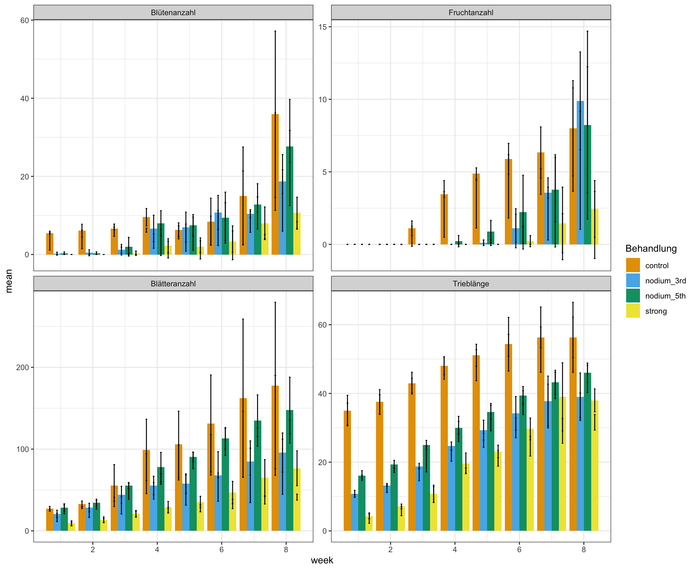
Eine Frage, die sich im Rahmen der Analyse noch gestellt hat, war ob die Outcomes untereinander stark korrelieren. Daher wurde nochmal entschieden sich die Korrelation der vier Outcomes anzuschauen. Wir machen das jetzt erstmal über die Woche sechs bis Woche acht. In den früheren Wochen haben die Pflanzen noch keine Früchte und dann sehen die Abbildungen sehr seltsam verzerrt aus.
Es gibt eine große Auswahl an R Paketen und damit auch Plots für die Korrelation. In dem Tutorial Correlation plot in R werden dir eine große Auwahl präsentiert.
Wir filtern uns also die Wochen sechs bis acht und nutzen dann die Funktion pivot_wider() um die Outcomes wieder nebeneinander in vier Spalten anzuordnen. Da pivot_wider() die wiederholenden Zeilen von Behandlung und Block zusammenfasst, müssen wir die Spalten nochmal wieder ausklappen. Dieses Ausklappen machen wir mit der Funktion unnest().
In Abbildung A.11 sehen wir jetzt ein Beispiel für ein Korrelationsplot. Es gibt wirklich sehr viele Möglichkeiten in R sich die Korrelation von numerischen Spalten anzeigen zu lassen. Wir wählen hier nur den Korrelationskoeffizient nach Kendall, da wir hier nicht nur normalverteilte Outcomes vorliegen haben. In dem Histogramm auf der Diagonalen kannst du auch sehr gut die Poissonverteilungen von der Normalverteilung unterscheiden. Die Trieblänge ist normalverteilt und die anderen Outcomes mit den Anzahlen folgen einer Poissonverteilung.
cutting_cor_tbl %>%
select(flower:shoot) %>%
pairs.panels(smooth = TRUE, density = TRUE, method = "kendall", lm = FALSE,
cor = TRUE, ellipses = FALSE, stars = TRUE) 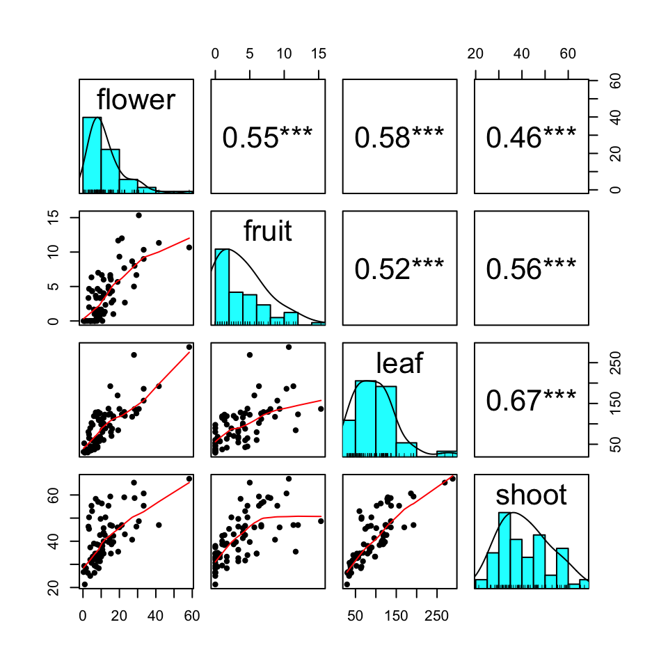
Wunderbar, jetzt können wir mit der Analyse der Outcomes anfangen. Wir rechnen als erstes die Trieblänge als eine multiple lineare Gaussian Regression. Danach dann die Anzahlen mit einer multiplen linearen Poisson Regression. Dann wollen wir noch das Compact letter display für die multiplen Vergleiche wiedergegeben haben.
A.7.1 Trieblänge
Beginnen wir damit, dass wir uns zuerst den Datensatz filtern. Wir wollen nur die Trieblänge und die achte Woche in unseren Analysedatensatz. Dann sind wir sicher, dass wir nicht ausversehen eine andere Analyse rechnen.
shoot_length_tbl <- cutting_tbl %>%
filter(outcome == "shoot" & week == 8)Wir bauen uns unser lineares Modell mit der Annahme einers normalverteilten Outcomes mit der Funktion lm(). Wir nehmen noch den Interaktionsterm für die Behandlung und Blöcke mit in das Modell.
shoot_length_fit <- lm(rsp ~ trt + block + trt:block,
data = shoot_length_tbl)Ein kurzer Blick in eine zweifaktorielle ANOVA um zu schauen ob wir überhaupt einen Behandlunsgeffekt haben und eventuell auch eine signifikante Interaktion.
shoot_length_fit %>%
anova() %>%
model_parameters()Parameter | Sum_Squares | df | Mean_Square | F | p
-----------------------------------------------------------
trt | 1651.86 | 3 | 550.62 | 18.45 | < .001
block | 1.67 | 1 | 1.67 | 0.06 | 0.816
trt:block | 73.67 | 3 | 24.56 | 0.82 | 0.500
Residuals | 477.57 | 16 | 29.85 | |
Anova Table (Type 1 tests)Wir haben einen signifikanten Behandlungseffekt vorliegen und keine signifikante Interaktion zwischen der Behandlung und den Blöcken. Das ist wie wir es wollten und dann können wir noch kurz schauen, wie gut unser Experiment funktioniert hat. Wieviel Varianz können wir mit dem Behandlungen erklären? Wir berechnen dazu \(\eta^2\).
shoot_length_fit %>%
eta_squared()# Effect Size for ANOVA (Type I)
Parameter | Eta2 (partial) | 95% CI
-----------------------------------------
trt | 0.78 | [0.55, 1.00]
block | 3.49e-03 | [0.00, 1.00]
trt:block | 0.13 | [0.00, 1.00]
- One-sided CIs: upper bound fixed at [1.00].Mit einem \(\eta^2\) von \(0.78\) können wir 78% der Varianz in unserem Experiment mit der Behandlung erklären. Das ist mehr als gut. Das spricht für ein gut geplantes und durchgeführtes Experiment.
Nachdem wir also sicher sind, dass wir etwas in den Daten haben, nutzen wir wieder das Paket emmeans um die paarweisen Vergleiche zu rechnen. Dafür legen wir erstmal wieder ein emmeans Objekt an. Wir müssen uns hier nicht um die Blöcke scheren, wir haben ja keine signifikante Interaktion vorliegen.
shoot_emm_obj <- shoot_length_fit %>%
emmeans(specs = ~ trt) NOTE: Results may be misleading due to involvement in interactionsAls nächstes rechnen wir dann schon die paarweisen Vergleiche und erhalten die Bonferroni adjustierten \(p\)-Werte zurück. Wenn du nicht adjustieren \(p\)-Werte willst, dann nehme einfach die Option adjust = "none".
shoot_emm_obj %>%
contrast(method = "pairwise", adjust = "bonferroni") contrast estimate SE df t.ratio p.value
control - nodium_3rd 18.53 3.15 16 5.874 0.0001
control - nodium_5th 11.22 3.15 16 3.558 0.0157
control - strong 21.53 3.15 16 6.825 <.0001
nodium_3rd - nodium_5th -7.31 3.15 16 -2.316 0.2049
nodium_3rd - strong 3.00 3.15 16 0.951 1.0000
nodium_5th - strong 10.31 3.15 16 3.267 0.0291
Results are averaged over the levels of: block
P value adjustment: bonferroni method for 6 tests Wir können uns dann auch das compact letter display wiedergeben lassen.
shoot_emm_obj %>%
cld(Letters = letters, adjust = "bonferroni") trt emmean SE df lower.CL upper.CL .group
strong 34.8 2.23 16 28.5 41.1 a
nodium_3rd 37.8 2.23 16 31.5 44.1 ab
nodium_5th 45.1 2.23 16 38.8 51.4 b
control 56.3 2.23 16 50.1 62.6 c
Results are averaged over the levels of: block
Confidence level used: 0.95
Conf-level adjustment: bonferroni method for 4 estimates
P value adjustment: bonferroni method for 6 tests
significance level used: alpha = 0.05
NOTE: If two or more means share the same grouping symbol,
then we cannot show them to be different.
But we also did not show them to be the same. Insbesondere in diesme Beispiel macht es auch Sinn sich nicht alle paarweisen Vergleiche anzuschauen sondern eben nur die Vergleiche zu der Kontrolle. Dafür nutzen wir dann die Methode trt.vs.ctrlk und wählen mit der Option ref = 1 unser Referenzlevel des Behandlungsfaktors. Da unsere Kontrolle schon das erste Level ist, schreiben wir also ref = 1 und erhalten die Vergleiche zu der Kontrolle.
shoot_emm_obj %>%
contrast(method = "trt.vs.ctrlk", ref = 1,
adjust = "bonferroni") contrast estimate SE df t.ratio p.value
nodium_3rd - control -18.5 3.15 16 -5.874 0.0001
nodium_5th - control -11.2 3.15 16 -3.558 0.0079
strong - control -21.5 3.15 16 -6.825 <.0001
Results are averaged over the levels of: block
P value adjustment: bonferroni method for 3 tests Wie wir sehen rechnen wir nur noch die Vergleiche zu der Kontrolle. Alle Vergleiche sind auch signifikant und die Kontrolle ist immer größer als die anderen Behandlungen. Wenn du das Minus gedreht haben möchtest, dann nutze reverse = TRUE als Option. Dann rechnest du Kontrolle minus den anderen Behandlungen.
Zum Abschluss können wir uns für die achte Woche noch die Barplots in der Abbildung A.12 für die vier Behandlungen anschauen. Wir mitteln dabei über die beiden Blöcke. Wir wollen jetzt das Compact letter display noch ergänzen. Dafür bauen wir uns einen letter_vec in dem wir die richtig sortierten Buchstaben dann eintragen.
letter_vec <- c("c", "ab", "b", "a")Dann bauen wir uns noch ein Objekt mit den Mittelwerten und der Stndardabweichung für die vier Behandlungen.
Abschließend können wir dann die Barplots mit den Fehlerbalken und dem Compact letter display darstellen. Ich habe hier mal eine rote Farbe für die Buchstaben gewählt, aber du kannst da gerne eine andere Farbe nutzen. so sieht man aber die Buchstaben auf den ersten Blick. Die Position der Buchstaben auf der y-Achse habe ich mit Try&Error dann selber rausgefunden. Geht sicherlich noch schöner, aber so ist es dann auch gut.
ggplot(shoot_stat_tbl, aes(x = trt, y = mean, fill = trt)) +
geom_bar(stat = "identity", position = position_dodge()) +
geom_errorbar(aes(ymin = mean-sd, ymax = mean+sd),
width = 0.2, position = position_dodge(0.9)) +
theme_bw() +
labs(y = "Mittlere Anzahl an Blüten",
x = "", fill = "") +
scale_fill_okabeito() +
annotate("text", x = c(1, 2, 3, 4), c(70, 48, 55, 45),
label = letter_vec, size = 5, color = "red")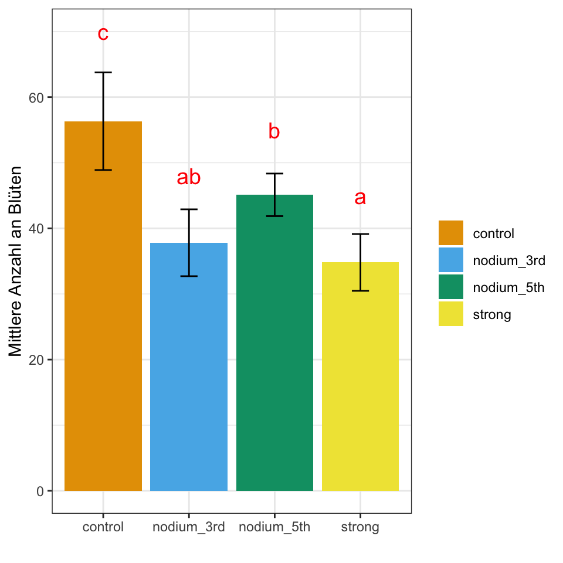
A.7.2 Blütenanzahl
Im Folgenden schaue ich mir nur die Blütenanzahl flowers als Outcome an. Die anderen Outcomes sind dann einfach nur Copy&Paste von dieser Analyse der Blütenanzahl. Wenn wir eine Analyse für eine Poissonregression rechnen können, dann können wir das auch ohne weiteres für die anderen beiden Outcomes.
Als erstes filtern wir wieder die Daten. Wir wollen nur die Blüten und die achte Woche in unseren Analysedatensatz. Dann sind wir sicher, dass wir nicht ausversehen eine andere Analyse rechnen.
flowers_tbl <- cutting_tbl %>%
filter(outcome == "flower" & week == 8)Jetzt kommt der größte Unterschied. Wir rechnen kein lm() mit der implizieten Annahme eines normalverteilten Outcomes sondern ein glm() in dem wir dann die Verteilunsgfamilie des Outcomes definieren können. In unserem Fall dann für die Zähldaten die Quasipoissonverteilung. Sonst ist das Modell gleich wie ebi unserer Trieblänge.
flowers_fit <- glm(rsp ~ trt + block + trt:block,
data = flowers_tbl,
family = quasipoisson())Schauen wir uns einmal die ANOVA an. Da wir ein GLM rechnen, können wir nicht die Funktion anova() nutzen sondern müssen die Funktion Anova() aus dem R Paket car anwenden. Dann erhalten wir auch die \(p\)-Werte die wir wollen.
flowers_fit %>%
car::Anova() %>%
model_parameters()Parameter | Chi2 | df | p
-------------------------------
trt | 19.41 | 3 | < .001
block | 0.49 | 1 | 0.484
trt:block | 1.80 | 3 | 0.615
Anova Table (Type 2 tests)Im Prinzip das gleiche Ergebnis wie schon bei der Trieblänge. Wir haben einen signifikanten Effekt der Behandlung auf die Blütenanzahl und keine signifkante Interaktion. Wir rechnen also mit dem Modell jetzt weiter. Wiederum nutzen wir das R Paket emmeans. Wichtig ist hier, dass wir als Typ dann die response angeben. Sonst erhalten wir alle Effektschätzer auf der Link-Scale und die Link-Scale können wir dann nicht interpretieren.
flowers_emm_obj <- flowers_fit %>%
emmeans(specs = ~ trt, type = "response") Wir machen auch hier wieder so weiter wie schon bei der Treiblänge. Einmal die paarweisen Vergleiche mit Bonferroni adjustierten \(p\)-Werten.
flowers_emm_obj %>%
contrast(method = "pairwise", adjust = "bonferroni") contrast ratio SE df null z.ratio p.value
control / nodium_3rd 1.702 0.444 Inf 1 2.037 0.2498
control / nodium_5th 1.087 0.249 Inf 1 0.363 1.0000
control / strong 3.278 1.081 Inf 1 3.601 0.0019
nodium_3rd / nodium_5th 0.639 0.169 Inf 1 -1.698 0.5374
nodium_3rd / strong 1.926 0.683 Inf 1 1.847 0.3883
nodium_5th / strong 3.016 1.002 Inf 1 3.323 0.0053
Results are averaged over the levels of: block
P value adjustment: bonferroni method for 6 tests
Tests are performed on the log scale Dann lassen wir uns noch das Compact letter display für die Blütennzahl wiedergeben.
flowers_emm_obj %>%
cld(Letters = letters, adjust = "bonferroni") trt rate SE df asymp.LCL asymp.UCL .group
strong 8.91 2.57 Inf 4.34 18.3 a
nodium_3rd 17.16 3.54 Inf 10.24 28.7 ab
nodium_5th 26.88 4.43 Inf 17.81 40.6 b
control 29.21 4.67 Inf 19.60 43.5 b
Results are averaged over the levels of: block
Confidence level used: 0.95
Conf-level adjustment: bonferroni method for 4 estimates
Intervals are back-transformed from the log scale
P value adjustment: bonferroni method for 6 tests
Tests are performed on the log scale
significance level used: alpha = 0.05
NOTE: If two or more means share the same grouping symbol,
then we cannot show them to be different.
But we also did not show them to be the same. Auch hier könnten wir nur zu der Kontrolle vergleichen, wenn wir das wollen würden. Hier ist aber das Rüchschneiden nicht so signifikant wie bei der Trieblänge. Hier sehen wir dann auch die Rate der Blüten. Wir haben also im Verhätnis zur Kontrolle nur knapp die Häfte an Blüten bei der Behandlung nodium_3rd und fast nur ein Drittel der Anzahl an Blüten bei der Behandlung strong.
flowers_emm_obj %>%
contrast(method = "trt.vs.ctrlk", ref = 1,
adjust = "bonferroni") contrast ratio SE df null z.ratio p.value
nodium_3rd / control 0.587 0.153 Inf 1 -2.037 0.1249
nodium_5th / control 0.920 0.211 Inf 1 -0.363 1.0000
strong / control 0.305 0.101 Inf 1 -3.601 0.0010
Results are averaged over the levels of: block
P value adjustment: bonferroni method for 3 tests
Tests are performed on the log scale Jetzt kanst du den R Code im Prinzip auch nochmal für die zwei anderen Outcomes durchführen.
A.8 Einen TukeyHSD Test rechnen
Du findest auf YouTube Spielewiese in R - Teil 03.0 - ANOVA zusammen mit TukeyHSD die Auswertung einmal als Video. Ich werde zwar alles nochmal hier als Text aufschreiben, aber manchmal ist das Sehen und Hören dann einfacher.
In diesem sehr kurzen Beispiel wollen wir uns einem den Tukey Test anschauen. Eigentlich ist es der Tukey HSD Test für Tukey Honest Significant Differences. Die von dieser Funktion zurückgegebenen \(p\)-Werte und 95% Konfidenzintervalle basieren auf der t-Test Verteilung. Wir nehmen also ein normalverteiltes Outcome \(y\) sowie eine homogene Varianz an.
Die auf diese Weise konstruierten 95% Konfidenzintervalle gelten nur für balancierte Designs, bei denen in jedem Level des Faktors die gleiche Anzahl von Beobachtungen gemacht wird. Die Funktion TukeyHSD() enthält eine Anpassung für den Stichprobenumfang, die sinnvolle 95% Konfidenzintervalle für leicht unbalancierte Designs erzeugt. Ja, und da geht es schon wieder los. Was heißt sinnvoll? Oder andersherum, was ist eine leichte Abweichung? Deshalb mag ich persönlich nicht die Funktion TukeyHSD() und ziehe das R Paket emmeans vor. Du siehst auch in den anderen Beispielen immer die Anwendung von emmeans.
Aber gut, hier soll es ja um den Tukey Test gehen. Also wir nehmen uns einmal ein simples Beispiel mit verschiedenen Bodenarten und dann wollen wir als Outcome \(y\) die Pflanzenhöhe miteinander vergleichen.
soil_tbl <- read_excel("data/soil_1fac_data.xlsx") %>%
mutate(variante = as_factor(variante)) %>%
select(variante, height)Die Funktion TukeyHSD() ist alt. Deshalb kann die Funktion nur den Modellfit aus der Funktion aov() verarbeiten. Die Funktion aov() wiederum ist eigentlich nur eine Funktion, die die beiden Funktionen anova() und lm() in ungünstiger Art und Weise kombiniert. Aber gut, geht eben nicht anders.
aov_fit <- aov(height ~ variante, data = soil_tbl)Dann können wir den Modellfit in die Funktion TukeyHSD() stecken und benutzen. Wir kriegen eine etwas seltsame Ausgabe, aber wir wollen auch hier dann weiter zu dem compact letter display.
tukey_obj <- aov_fit %>%
TukeyHSD()Das compact letter display können wir über die Funktion multcompLetters() erstellen. Wir müssen dafür die \(p\)-Werte extrahieren und dann an die Funktion weiterleiten. Hier ist wichtig, dass wir nur adjustierte \(p\)-Werte wiederbekommen. Wenn du unadjustierte \(p\)-Werte möchtest, dann musst du nochmal in die Funktion emmeans() schauen.
tukey_obj %>%
pluck("variante") %>%
magrittr::extract( , "p adj") %>%
multcompLetters() Torf Kompostiertes Gehäckseltes Aufgefasertes Holzfasern
"ab" "ab" "a" "ab" "b" Mehr zum compact letter display und der Interpretation kannst du im Kapitel zu Multiple Vergleiche oder Post-hoc Tests nachlesen. Dort findest du auch eine Alternative zu dem Tukey Test.
A.9 Auswertung von Pflugdaten mit ggplot Templates
In diesem Beispiel wollen wir eine Exceldatei mit mehreren Tabellenblättern in eine Liste einlesen. Dann werden wir noch das Template in ggplot kennen lernen. Wir können nämlich auf Daten mit den gleichen Spaltennamen auch immer wieder den gleichen Plot anwenden. Das macht es natürlich recht einfach, denn wir müssen nicht immer den gleichen R Code tippen und Kopieren.
Fangen wir also alle Tabellenblätter einer Exceldatei einzulesen. Wir brauchen dafür den Pfad zu der Datei. Hier bei mit ist es recht einfach, aber bei dir mag es etwas komplizierter sein. Du kannst auch einfach die Datei einmal über das RStudio einlesen und dann den Pfad kopieren.
plowing_file <- file.path("data/plowing_data.xlsx")In Folgenden leiten wir den Pfad in die Funktion excel_sheets() die uns dann die einzelnen Tabellenblätter wiedergibt. Dann müssen wir noch den Vektor mit den Tabellenblätternmane benennen. Dann können wir die Funktion map() nutzen um alle Blätter, die sich in der Exceldatei im Pfad befinden, in eine Liste laden.
plowing_lst <- plowing_file %>%
excel_sheets() %>%
rlang::set_names() %>%
map(read_excel, path = plowing_file)Wir wollen jetzt auf der Liste mit der Funktion map() noch ein paar Anpassungen durchführen. Die Funktion map() erlaubt uns andere Funktion auf alle Listeneinträge der Liste anzuwenden. Als erstes Sortieren wir alle Tibble in jedem Listeneintrag und verwandeln dann die Spalten in Faktoren, die eben auch Faktoren repräsentieren.
plowing_lst <- plowing_lst %>%
map(~arrange(.x, day, block, variant)) %>%
map(~mutate(.x,
block = as_factor(block),
variant = as_factor(variant),
day = as_factor(day))) Jetzt brauchen wir aber die Datensätze wieder einzeln und wollen uns daher einmal die beiden Listen as und water mit der Funktion pluck() aus der Liste rausziehen und in ein eigenes Objekt abspeichern.
as_tbl <- pluck(plowing_lst, "as")
water_tbl <- pluck(plowing_lst, "water")Nun kommen wir zu der Möglichkeit ein Template in ggplot anzulegen. Wir bauen uns dafür einfach genau so wie immer ein ggplot. Mit der Ausnahme, dass wir keine Daten in die Funktion ggplot() stecken sondern eine leere Funktion ggplot() mit der Funktion aes() verbinden. Das machen wir dann für alle Layer, die wir dann in dem ggplot() sehen wollen. Dann speichern wir das ggplot Objekt für unseren Barplot ab.
p_template <- ggplot() +
aes(x = variant, y = mean, group = day, fill = day) +
geom_bar(stat = "identity", position = position_dodge()) +
geom_errorbar(aes(ymin = mean-sd, ymax = mean+sd),
width = 0.2, position = position_dodge(0.9)) +
theme_bw() +
labs(fill = "Tag") +
scale_fill_okabeito()Wir wollen jetzt einmal für das Outcome as den Barplot erstellen. Dafür brauchen wir wieder die Daten, die wir uns mit der Funktion summarise() zusammenbauen. Wir haben dann die Mittelwerte und die Standardabweichung für die Behandlungen.
`summarise()` has grouped output by 'day'. You can override using the `.groups`
argument.In der Abbildung A.13 sehen wir dann den Barplot für unser Outcome as. Der Barplot ist jetzt erstmal nichts besonderes, aber wie wir den Plot bauen schon. Wir nutzen dafür den Operator %+%. Mit dem Operator %+% können wir einen leeren ggplot mit einem neuen Datensatz verbinden. Wichtig ist nur, dass die Spaltennamen dann jeweils übereinstimmen.
p_template %+% as_stat_tbl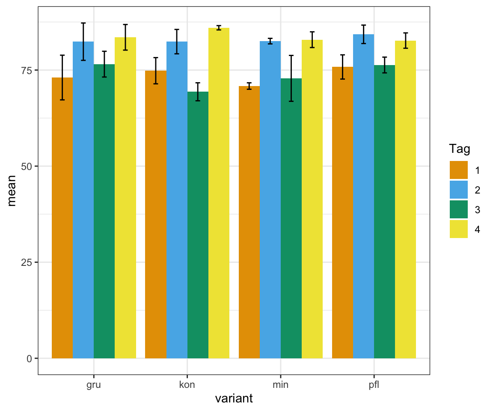
as.Das ganze können wir dann auch einmal für das Outcome water machen.
water_stat_tbl <- water_tbl %>%
group_by(day, variant) %>%
summarise(mean = mean(water),
sd = sd(water))`summarise()` has grouped output by 'day'. You can override using the `.groups`
argument.In der Abbildung A.14 sehen wir dann die Anwendung des Operators %+% auf den Datensatz für unser Outcome water. Das ist jetzt natürlich sehr effizient. Wir können das Template auf die anderen beiden Outcomes ebenfalss anwenden. Damit sind wir sicher, das wir immer die gleiche Beschriftung und eben auch die gleichen Farben haben.
p_template %+% water_stat_tbl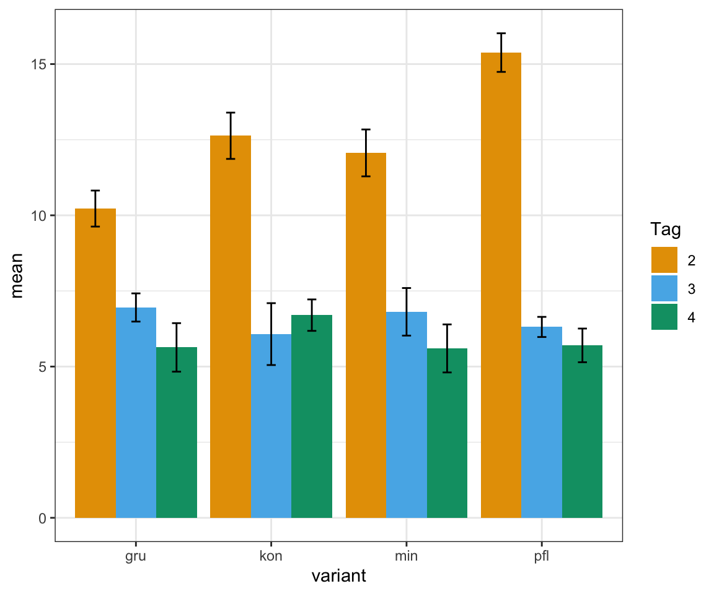
water.Wie immer musst du bei jedem Beispiel schauen, ob du alles so stark automatisieren willst. Meistens ist die Automatisierung nicht notwendig, aber wenn du wie ich dann teilweise sehr viele Datensätze auswertest, dann geht die Auswertung natürlich mit einer Automatisierung sehr viel schneller.
A.10 Auswertung mit Messwiederholungen
In diesem Abschnitt wollen wir ein multiples lineares Gaussion gemischtes Modell rechnen. Das heißt, wir wollen die Messwiederholungen über die Wochen mit in unser Modell als einen zufälligen Effekt aufnehmen. Dafür brauchen wir wieder unsere Daten zu dem Rückschnitt. Wir nehmen aber hier nur die Trieblänge als normalverteiltes Outcome. Dann wollen wir herausfinden, ob die drei Arten des Rückschnitts und die Kontrolle einen Einfluss auf die Trieblänge haben.
cutting_raw_tbl <- read_excel("data/cutting_data.xlsx") %>%
clean_names()Wir in Kapitel A.7 müssen wir die Daten wieder von dem Wide-Format in das Long-Format umwandeln. Wir wollen aber vorher nur die Spalten wähen die shoot in dem Spaltennamen haben. Diese Auswahl können wir über die Funktion matches() erreichen. Dann können wir die Funktion pivot_longer() nutzen um unseren Datensatz in dem Long_Format zu bauen.
cutting_tbl <- cutting_raw_tbl %>%
select(trt, block, matches("shoot")) %>%
pivot_longer(cols = shoot_1:last_col(),
names_to = c("outcome", "week"),
names_sep = "_",
values_to = "rsp") %>%
arrange(outcome, week, trt, block, rsp) %>%
mutate(block = as_factor(block),
trt = as_factor(trt),
outcome = as_factor(outcome),
week = as.numeric(week))Schauen wir uns in der Abbildung A.15 nochmal die Daten an. Wir haben einen Effekt zwischen den Behandlungen an jedem Messtermin. Die Pflanzen an den jeweiligen Messterminen sind aber nicht unabhängig voneinander. Wir messen ja immer wieder die gleiche Pflanze. So sind die Messtermine untereinander korreliert. Um diese Korrelation oder Abhängigkeit der Mestermine zu modellieren, nutzen wir lineare gemischte Modelle.
cutting_tbl %>%
ggplot(aes(week, rsp, color = trt, linetype = block)) +
theme_minimal() +
geom_point() +
stat_smooth(se = FALSE) +
scale_color_okabeito()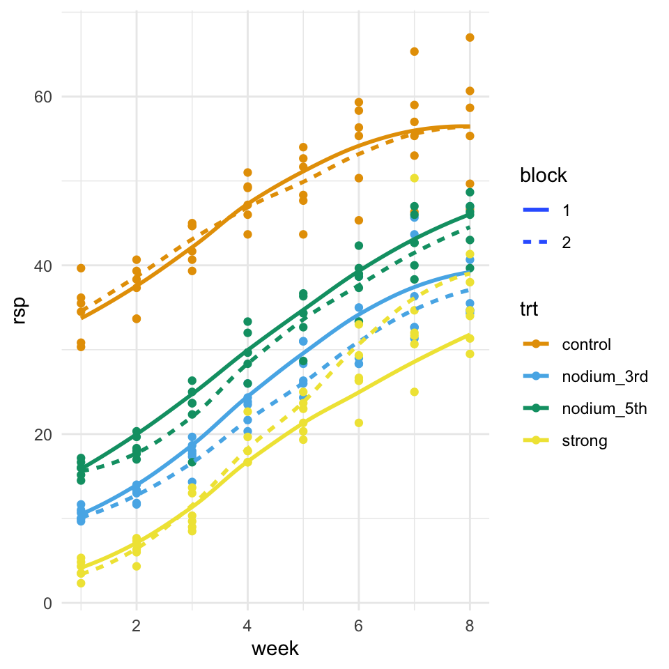
In R nutzen wir das Paket lme4 mit der Funktion lmer() um ein lineares gemisches Modell mit Normalverteilungsannahme zu fitten. Der vordere Teil des Modells ist gleich wie in einem normalen linearen Modell. Was sich hier ändert ist der zufällige Effekt, den wir durch (1|week) beschreiben. Unsere Wochen sind untereinander korreliert und deshalb wandert der Faktor Woche in den zufälligen Term.
lmer_fit <- lmer(rsp ~ trt + block + trt:block + (1|week),
data = cutting_tbl)Schauen wir einmal an, wie gut unser Modell funktioniert hat. Wieviel der Varianz kann denn unser Modell erklären? Wir nutzen dazu die Funktion r2() aus dem R Paket performance.
lmer_fit %>% r2# R2 for Mixed Models
Conditional R2: 0.940
Marginal R2: 0.470Das \(R^2_{conditional}\) ist der erklärte Anteil der Varianz von den festen und zufälligen Effekten zusammen. Da wir hier ein \(R^2\) von fast 95% haben, können wir mit unserem Modell fast die gesamte Variabilität in unserem Experiment erklären. Das ist selten zu beobachten, aber sehr schön. Das \(R^2_{marginal}\) ist der erklärte Anteil der Varianz von den festen Effekten alleine. Hier haben wir dann gut 50% erklärte Varianz. Damit wissen wir immerhin, dass gut die Hälfte der Variabilität in unseren Daten von unserer behandlung kommt, unabhängig von dem zufälligen Effekt.
Wir können dann noch den Intraclass Correlation Coefficient (abk. ICC) berechnen. Der ICC beschreibt den Anteil der Varianz, der durch die Gruppierungsstruktur in der Stichprobe erklärt wird. Wir können den Wert direkt aus der Summary des lmer Objektes berechnen.
lmer_fit %>% summary()Linear mixed model fit by REML ['lmerMod']
Formula: rsp ~ trt + block + trt:block + (1 | week)
Data: cutting_tbl
REML criterion at convergence: 1067.5
Scaled residuals:
Min 1Q Median 3Q Max
-3.59023 -0.52072 -0.00942 0.49560 4.68315
Random effects:
Groups Name Variance Std.Dev.
week (Intercept) 109.134 10.4467
Residual 13.818 3.7173
Number of obs: 192, groups: week, 8
Fixed effects:
Estimate Std. Error t value
(Intercept) 47.284722 3.770618 12.5403
trtnodium_3rd -21.298611 1.073088 -19.8480
trtnodium_5th -15.576389 1.073088 -14.5155
trtstrong -29.034722 1.073088 -27.0572
block2 -0.014028 1.073088 -0.0131
trtnodium_3rd:block2 -2.194167 1.517575 -1.4458
trtnodium_5th:block2 -1.576111 1.517575 -1.0386
trtstrong:block2 2.979444 1.517575 1.9633
Correlation of Fixed Effects:
(Intr) trtn_3 trtn_5 trtstr block2 tr_3:2 tr_5:2
trtnodm_3rd -0.142
trtnodm_5th -0.142 0.500
trtstrong -0.142 0.500 0.500
block2 -0.142 0.500 0.500 0.500
trtndm_3r:2 0.101 -0.707 -0.354 -0.354 -0.707
trtndm_5t:2 0.101 -0.354 -0.707 -0.354 -0.707 0.500
trtstrng:b2 0.101 -0.354 -0.354 -0.707 -0.707 0.500 0.500Dafür nehmen wir die Varianz der Gruppe week und teilen die Varianz durch die gesamte Varianz bestehend aus den Residuen plus der Varianz der Gruppe. Damit erfahren wir dann, dass in der zufälligen Effekten unsere Gruppe week fast 90% der Varianz erklärt. Was wiederum ein wirklich guter Wert ist.
\[ ICC = 109.134/(109.134 + 13.818) = 0.888 \]
Natürlich können wir das ICC auch direkt in R mit einer Funktion berechnen lassen. Wir nutzen nur den adjustierten ICC und ignorieren in diesem Fall den anderen Wert.
lmer_fit %>% icc# Intraclass Correlation Coefficient
Adjusted ICC: 0.888
Unadjusted ICC: 0.471Jetzt können wir noch flott die paarweisen Vergleiche rechnen, denn praktischerweose ändert sich hier nichts mehr. Wir können die den Fit aus unserem linearen gemischten Modell einfach in die Funktionalität von emmeans pipen und dann geht alles seinen normalen Gang.
emm_obj <- lmer_fit %>%
emmeans(specs = ~ trt) Wir machen auch hier wieder so weiter wie wir es schon gewöhnt sind. Einmal rechnen wir die paarweisen Vergleiche mit Bonferroni adjustierten \(p\)-Werten. Spannend ist jetzt, dass wir hier über alle Messzeitpunkte hinweg einen Unterschied zwischen allen Behandlungen sehen.
emm_obj %>%
contrast(method = "pairwise", adjust = "bonferroni") contrast estimate SE df t.ratio p.value
control - nodium_3rd 22.40 0.759 177 29.515 <.0001
control - nodium_5th 16.36 0.759 177 21.567 <.0001
control - strong 27.55 0.759 177 36.301 <.0001
nodium_3rd - nodium_5th -6.03 0.759 177 -7.949 <.0001
nodium_3rd - strong 5.15 0.759 177 6.786 <.0001
nodium_5th - strong 11.18 0.759 177 14.735 <.0001
Results are averaged over the levels of: block
Degrees-of-freedom method: kenward-roger
P value adjustment: bonferroni method for 6 tests Dann lassen wir uns noch das Compact letter display für die Trieblänge wiedergeben. Auch hier sehen wir, dass sich alle Behandlungen voneinander über alle Zeitpunkte hinweg voneinander unterscheiden. Das stimmt dann auch mit unserer Abbildung überein, die Geraden der Behandlungen laufen ja alle nebeneinander mit Abstand.
emm_obj %>%
cld(Letters = letters, adjust = "bonferroni") trt emmean SE df lower.CL upper.CL .group
strong 19.7 3.73 7.22 7.41 32.1 a
nodium_3rd 24.9 3.73 7.22 12.56 37.2 b
nodium_5th 30.9 3.73 7.22 18.59 43.2 c
control 47.3 3.73 7.22 34.95 59.6 d
Results are averaged over the levels of: block
Degrees-of-freedom method: kenward-roger
Confidence level used: 0.95
Conf-level adjustment: bonferroni method for 4 estimates
P value adjustment: bonferroni method for 6 tests
significance level used: alpha = 0.05
NOTE: If two or more means share the same grouping symbol,
then we cannot show them to be different.
But we also did not show them to be the same. Und dann nochmal der Vergleich zu der Kontrolle, falls das mehr gewünscht sein sollte. Auch hier sehen wir, dass alle Vergleiche zu der Kontrolle signifikant sind. Über alle Messzeitpunkte hinweg ist die Kontrolle immer Größer als die Pflanzen mit den Rückschnittbehandlungen.
emm_obj %>%
contrast(method = "trt.vs.ctrlk", ref = 1,
adjust = "bonferroni") contrast estimate SE df t.ratio p.value
nodium_3rd - control -22.4 0.759 177 -29.515 <.0001
nodium_5th - control -16.4 0.759 177 -21.567 <.0001
strong - control -27.5 0.759 177 -36.301 <.0001
Results are averaged over the levels of: block
Degrees-of-freedom method: kenward-roger
P value adjustment: bonferroni method for 3 tests A.11 Spurenelemente in Spinatblättern und Stielen
In der folgenden Datenanalyse schauen wir uns die Konzentrationen von den Spurenelementen Fe, Cd und Zn in Spinat an. Dabei haben wir zum einen in den Blätter und zum anderen in den Stielen gemessen. Daher haben wir insgesamt drei Outcomes an zwei Orten und somit sechs Kombinationen auszuwerten. Wir haben uns darüber hinaus noch sieben Behandlungen in je vier Blöcken als Wiederholung angeschaut. Laden wir also einmal die Daten.
spinach_tbl <- read_excel("data/spinach_metal_data.xlsx") %>%
mutate(trt = as_factor(trt),
sample = as_factor(sample),
block = as_factor(block))Wir haben die Daten im Wide-Format vorliegen, daher müssen wir die Daten über die Funktion pivot_longer() noch in das Long-Format umwandeln. Zum einen brauchen wir das Long-Format für unsere Abbildungen und zum anderen dann auch für unsere Analysen.
spinach_plot_tbl <- spinach_tbl %>%
pivot_longer(cols = fe:zn,
names_to = "outcome",
values_to = "rsp") %>%
mutate(outcome = as_factor(outcome))
spinach_plot_tbl %>%
head# A tibble: 6 × 5
trt sample block outcome rsp
<fct> <fct> <fct> <fct> <dbl>
1 1 leaf 1 fe 16.9
2 1 leaf 1 cd 9.28
3 1 leaf 1 zn 0.127
4 1 stem 1 fe 7.95
5 1 stem 1 cd 7.97
6 1 stem 1 zn 0.0579Wir sehen, dass wir für jede Outcome/Sample Kombination ein zweifaktorielles Modell für Behandlung und Block rechnen müssen. Schauen wir uns zuerst wie immer einmal die Abbildung A.16 in ggplot() an und machen dann mit der Auswertung weiter.
ggplot(spinach_plot_tbl, aes(trt, rsp, shape = block, color = trt)) +
theme_minimal() +
geom_jitter() +
facet_wrap(~ outcome*sample, scales = "free_y", ncol = 2) +
labs(x = "Behandlung", y = "Gemessenes Outcome",
shape = "Block", color = "Behandlung") +
scale_color_okabeito()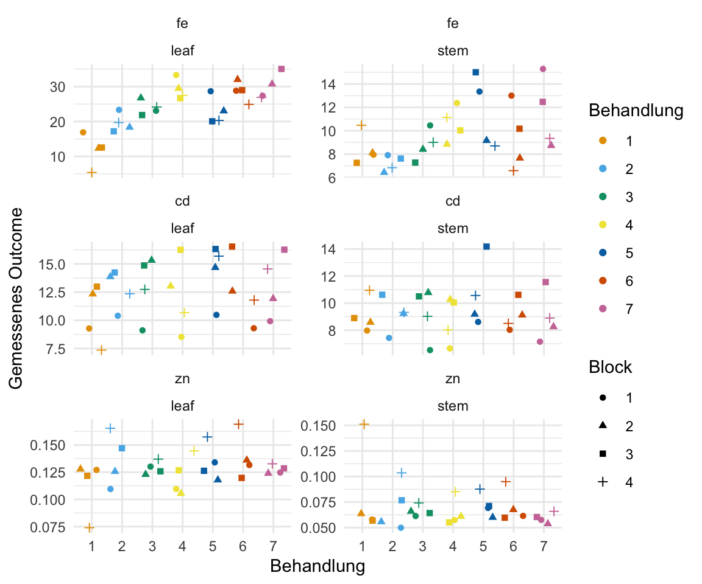
Da wir nur eine Beobachtung je Block/Behandlung Kombination haben, können wir später keine Interaktion rechnen. Wir bräiuchten dafür Wiederholungen auf der Ebene der Blöcke. Also nicht nur eine Pflanze pro Block und Behandlung. Im Folgenden gibt es einmal die umständliche Copy&Paste Variante und einmal die etwas komplexere Lösung über map() und nest().
A.11.1 Eisen (Fe) und Blatt
Machen wir es uns erstmal einfach. Wir müssen ja für jede der sechs Outcome/Sample Kombinationen eine ANOVA rechnen, dann rechnen wir einen multiplen Vergleich und lassen uns das Compact letter display wiedergeben. Das machen wir jetzt alles einmal für die Kombination Eisen und Blatt.
Also brauchen wir als erstes unseren Datensatz mit nur dem Outcome gleich fe und das Sample gleich leaf. Das Selektieren machen wir dann über die Funktion filter().
fe_leaf_tbl <- spinach_plot_tbl %>%
filter(outcome == "fe" & sample == "leaf")Dan müssen wir das lineare Modell schätzen. Das Schätzen der Koeffizienten übernimmt wie immer die Funktion lm(). Wir nehmen hier an, dass unsere Konzentrationen ungefähr normalverteilt sind. Wir können den Interaktionsterm trt:block nicht mit ins Modell nehmen, da wir nur eine Beobachtung je Behandlung/Block Kombination haben.
fe_leaf_fit <- lm(rsp ~ trt + block, data = fe_leaf_tbl)Jetzt können wir die ANOVA rechnen und schauen was wir da haben.
fe_leaf_fit %>% anova()Analysis of Variance Table
Response: rsp
Df Sum Sq Mean Sq F value Pr(>F)
trt 6 1015.454 169.2424 19.05310 0.00000067589 ***
block 3 84.352 28.1174 3.16542 0.049752 *
Residuals 18 159.888 8.8827
---
Signif. codes: 0 '***' 0.001 '**' 0.01 '*' 0.05 '.' 0.1 ' ' 1Wir haben einen ganz schwachen signifikanten Effekt des Blocks und einen starken signifikanten Effekt der Behandlung. Der Effekt des Blocks ist nicht so schön, wir würden eigentlich erwarten, dass der Block keinen Effekt hat. Wir haben ja die Zuordnung der Behandlungen zu den Blöcken zufällig durchgeführt. Da sollte also eigentlich kein Effekt des Blocks auftreten. Schauen wir nochmal wie stark die Effekte sind in dem wir uns das \(\eta^2\) berechnen.
fe_leaf_fit %>% eta_squared()# Effect Size for ANOVA (Type I)
Parameter | Eta2 (partial) | 95% CI
-----------------------------------------
trt | 0.86 | [0.73, 1.00]
block | 0.35 | [0.00, 1.00]
- One-sided CIs: upper bound fixed at [1.00].Der Effekt der behandlung it auf jeden Fall größer als der Effelt des Blocks. Gut 86% der Vrainz wird durch die Behandlung erklärt, dass passt dann soweit.
Wir rechnen jetzt mit der Funktion emmeans() weiter und berücksichtigen dabei die unterschiedlichen Mittelwerte der Blöcke für die einzelnen Behandlungen.
fe_leaf_emm <- fe_leaf_fit %>%
emmeans(~ trt)Jetzt können wir un die paarweisen Vergleich über die Funktion contrast() wiedergeben lassen. Wir sehen, dass wir einiges an signifikanten Ergebnissen vorliegen haben. Du kannst die Ausgabe in ein Tibble mit as_tibble() umwandeln und dir dann mit der Funktion print(n = 21) alle Zeilen ausgeben lassen.
fe_leaf_emm %>%
contrast(method = "pairwise", adjust = "bonferroni") contrast estimate SE df t.ratio p.value
trt1 - trt2 -7.844 2.11 18 -3.722 0.0328
trt1 - trt3 -12.156 2.11 18 -5.768 0.0004
trt1 - trt4 -17.429 2.11 18 -8.270 <.0001
trt1 - trt5 -11.218 2.11 18 -5.323 0.0010
trt1 - trt6 -16.877 2.11 18 -8.008 <.0001
trt1 - trt7 -18.222 2.11 18 -8.646 <.0001
trt2 - trt3 -4.312 2.11 18 -2.046 1.0000
trt2 - trt4 -9.585 2.11 18 -4.548 0.0052
trt2 - trt5 -3.374 2.11 18 -1.601 1.0000
trt2 - trt6 -9.033 2.11 18 -4.286 0.0093
trt2 - trt7 -10.378 2.11 18 -4.924 0.0023
trt3 - trt4 -5.273 2.11 18 -2.502 0.4664
trt3 - trt5 0.938 2.11 18 0.445 1.0000
trt3 - trt6 -4.721 2.11 18 -2.240 0.7970
trt3 - trt7 -6.066 2.11 18 -2.878 0.2101
trt4 - trt5 6.211 2.11 18 2.947 0.1809
[ reached getOption("max.print") -- omitted 5 rows ]
Results are averaged over the levels of: block
P value adjustment: bonferroni method for 21 tests Schauen wir uns für diesen Vergleich dann noch das Compact letter display an. Bitte beachte, dass du dir mit der Funktion arrange() immer die Reihenfolge der Behandlungen ausgeben lassen kannst. Sonst ist die Ausgabe nach der Spalte .group sortiert und nicht nach den Behandlungen. Wenn die Buchstaben nicht gleich sind, dann unterscheiden sich die Behandlungen.
fe_leaf_emm %>%
cld(Letters = letters, adjust = "none") %>%
arrange(trt) trt emmean SE df lower.CL upper.CL .group
1 11.8 1.49 18 8.66 14.9 a
2 19.6 1.49 18 16.50 22.8 b
3 23.9 1.49 18 20.81 27.1 b
4 29.2 1.49 18 26.09 32.3 c
5 23.0 1.49 18 19.88 26.1 b
6 28.7 1.49 18 25.53 31.8 c
7 30.0 1.49 18 26.88 33.1 c
Results are averaged over the levels of: block
Confidence level used: 0.95
significance level used: alpha = 0.05
NOTE: If two or more means share the same grouping symbol,
then we cannot show them to be different.
But we also did not show them to be the same. Auch hier schauen wir uns einmal die Korrelation zwischen den Outcomes in der Abbildung A.17 an. Wir sehen in der Abbildung A.17 (a) die Korrelation zwischen den beiden Outcomes Fe und Zn zusammen in den Blättern und den Stielen. Wir würden meinen, dass wir eine positive Korrelation vorliegen haben. Wir sehen, dass mit mehr Zn auch mehr Fe auftritt. Was uns aber etwas stutzig werden lässt, sind die beiden Punktewolken in der linken unteren Abbildung. Daher einmal schnell aufgetrennt für die Blätter in Abbildung A.17 (b) und für die Stiele in Abbildung A.17 (c). Wir sehen, dass wir nichts sehen. Denn getrennt für die Blätter und Stiele haben wir dann keine Korrelation mehr für die beiden Outcomes vorliegen.
spinach_tbl %>%
select(fe, zn) %>%
pairs.panels(smooth = TRUE, density = TRUE, method = "kendall", lm = TRUE,
cor = TRUE, ellipses = FALSE, stars = TRUE)
spinach_tbl %>%
filter(sample == "leaf") %>%
select(fe, zn) %>%
pairs.panels(smooth = TRUE, density = TRUE, method = "kendall", lm = TRUE,
cor = TRUE, ellipses = FALSE, stars = TRUE)
spinach_tbl %>%
filter(sample == "stem") %>%
select(fe, zn) %>%
pairs.panels(smooth = TRUE, density = TRUE, method = "kendall", lm = TRUE,
cor = TRUE, ellipses = FALSE, stars = TRUE) 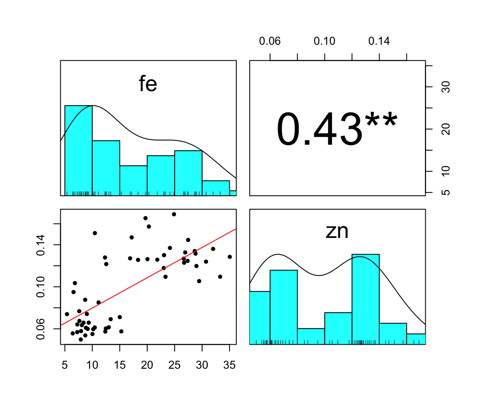
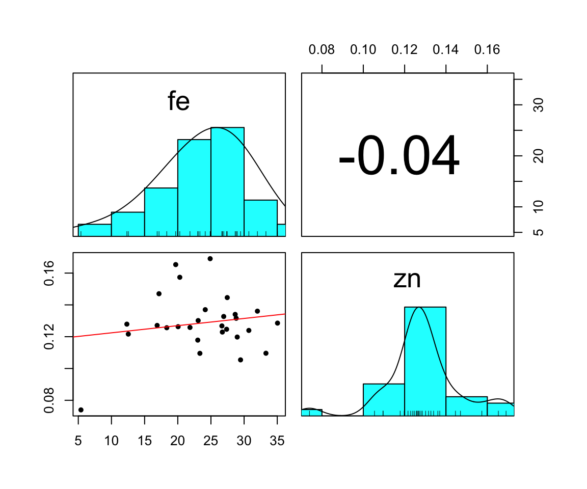
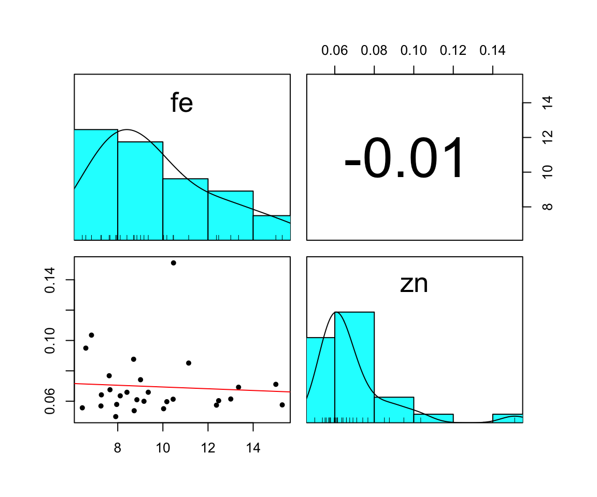
A.11.2 Und alles aufeinmal…
Nun gut, jetzt haben wir unsere Analyse für das Blatt und den Eisengehalt gerechnet. Wir müssten jetzt die Analyse nochmal für alle anderen fünf Kombinationen durchführen. Das würde einiges an Zeit kosten und auch sehr viel Copy&Paste Aufwand. Kann man machen, aber wir können die Analyse auch in einem Rutsch durchführen. Dafür nutzen wir die Funktion nest() und dann anschließend die Funktion map() um auf den genesteten Daten die Analysen zu rechnen.
Im ersten Schritt müssen wir unsere Daten gruppieren. Wir haben dann die sechs Kombinationen aus Outcome und Sample vorliegen. Dann nesten wir den Datensatz in sechs Zeilen. Wir klappen sozusagen die Daten für jede der sechs Kombinationen zusammen. Alles fällt dann in eine Zelle zusammen.
spinach_nest_tbl <- spinach_plot_tbl %>%
group_by(sample, outcome) %>%
nest() Schauen wir uns den genesteten Datensatz einmal an. Wir sehen, dass wir die gesamten Daten in der Spalte data zusammengefaltet haben. Wir haben also sechs Tibbles mit den Daten der jeweiligen Outcome/Sample Kombinationen in der Spalte data vorliegen.
spinach_nest_tbl # A tibble: 6 × 3
# Groups: sample, outcome [6]
sample outcome data
<fct> <fct> <list>
1 leaf fe <tibble [28 × 3]>
2 leaf cd <tibble [28 × 3]>
3 leaf zn <tibble [28 × 3]>
4 stem fe <tibble [28 × 3]>
5 stem cd <tibble [28 × 3]>
6 stem zn <tibble [28 × 3]>Wir können jetzt auf den Tibbles in der Spalte data weiter rechnen. Wir nutzen für das Weiterrechnen die Funktion map(), die in jeder Zeile der Spalte .data die gleiche Funktion ausführt. Unser Ergebnis speichern wir dann in einer neuen Spalte und dafür nutzen wir die Funktion mutate().
Konkret erstellen wir uns jetzt eine neue Spalte model in der das lineare Modell der Funktion lm() abliegt.
spinach_model_tbl <- spinach_nest_tbl %>%
mutate(model = map(data, ~lm(rsp ~ trt + block, data = .x))) Im weiteren Schritt rechnen wir jetzt auf der Spalte model eine ANOVA und lassen uns dann die schönere Ausgabe über die Funktion model_parameters() wiedergeben. Der wichtigste Tiel ist die Funktion unnest() die uns die Zellen mit den ANOVA Ergebnissen dann wieder ausklappt. Der Rest ist dann noch filtern und anpassen. Ich möchte das die Ausgabe reduziert ist und die p-Werte sollen auch schön formatiert werden.
spinach_model_tbl %>%
mutate(anova = map(model, anova)) %>%
mutate(parameter = map(anova, model_parameters)) %>%
select(sample, outcome, parameter) %>%
unnest(parameter) %>%
filter(Parameter != "Residuals") %>%
select(sample, outcome, Parameter, p) %>%
mutate(p = pvalue(p))# A tibble: 12 × 4
# Groups: sample, outcome [6]
sample outcome Parameter p
<fct> <fct> <chr> <chr>
1 leaf fe trt <0.001
2 leaf fe block 0.050
3 leaf cd trt 0.047
4 leaf cd block <0.001
5 leaf zn trt 0.424
6 leaf zn block 0.290
7 stem fe trt 0.021
8 stem fe block 0.016
9 stem cd trt 0.325
10 stem cd block <0.001
11 stem zn trt 0.512
12 stem zn block <0.001Auch können wir un die \(\eta^2\) für die Modelle berechnen lassen. Die Funktion unnest() klappt uns dann die Ergebnisse wieder aus. Dann müssen wir noch etwas aufräumen und schon haben wir für alle Kombinationen dann den Anteil der erklärten Varianz.
spinach_model_tbl %>%
mutate(eta = map(model, eta_squared)) %>%
unnest(eta) %>%
clean_names() %>%
select(sample, outcome, eta2_partial) # A tibble: 12 × 3
# Groups: sample, outcome [6]
sample outcome eta2_partial
<fct> <fct> <dbl>
1 leaf fe 0.864
2 leaf fe 0.345
3 leaf cd 0.475
4 leaf cd 0.775
5 leaf zn 0.260
6 leaf zn 0.183
7 stem fe 0.529
8 stem fe 0.430
9 stem cd 0.295
10 stem cd 0.652
11 stem zn 0.232
12 stem zn 0.589Im letzten Schritt bauen wir uns die Spalten für die Funktion emmeans(), dann die Kontraste und das Compact letter display. Hier nutzen wir die Schreibweise map(<Spalte>, <Funktion>, <Optionen>). Daher definieren wir erst welche Spalte map() bearbeiten soll. Dann die Funktion die map() nutzen soll und anschließend die Optionen für die Funktion. Wir können hier auch mehrere Optionen nacheinander angeben.
spinach_emm_tbl <- spinach_model_tbl %>%
mutate(emm = map(model, emmeans, ~trt)) %>%
mutate(contrast = map(emm, contrast, method = "pairwise",
adjust = "none")) %>%
mutate(cld = map(emm, cld, Letters = letters, adjust = "none"))Jetzt lassen wir uns die Spalte contrast wiedergeben. Wir müssen aber vorher die Spalte noch in ein Tibble umwandeln. Dann wollen wir noch die p-Werte schöner haben. Wichtig ist auch immer, dass wir über die Funktion select() die für uns wichtigen Spalten auswählen.
spinach_emm_tbl %>%
mutate(contrast = map(contrast, as_tibble)) %>%
unnest(contrast) %>%
select(sample, outcome, contrast, p.value) %>%
mutate(p.value = pvalue(p.value))# A tibble: 126 × 4
# Groups: sample, outcome [6]
sample outcome contrast p.value
<fct> <fct> <chr> <chr>
1 leaf fe trt1 - trt2 0.002
2 leaf fe trt1 - trt3 <0.001
3 leaf fe trt1 - trt4 <0.001
4 leaf fe trt1 - trt5 <0.001
5 leaf fe trt1 - trt6 <0.001
6 leaf fe trt1 - trt7 <0.001
7 leaf fe trt2 - trt3 0.056
8 leaf fe trt2 - trt4 <0.001
9 leaf fe trt2 - trt5 0.127
10 leaf fe trt2 - trt6 <0.001
# … with 116 more rowsNachdem wir uns die Kontraste für die paarweisen Vergleiche wiedergeben haben lassen, wollen wir jetzt noch die ganzen Compact letter displays haben. Auch hier nutzen wir dann die Funktion unnest() und wolle dann nicht alle Spalten haben.
spinach_emm_tbl %>%
mutate(cld = map(cld, arrange, trt)) %>%
unnest(cld) %>%
select(sample, outcome, trt, .group) %>%
print(n = 15)# A tibble: 42 × 4
# Groups: sample, outcome [6]
sample outcome trt .group
<fct> <fct> <fct> <chr>
1 leaf fe 1 " a "
2 leaf fe 2 " b "
3 leaf fe 3 " b "
4 leaf fe 4 " c"
5 leaf fe 5 " b "
6 leaf fe 6 " c"
7 leaf fe 7 " c"
8 leaf cd 1 " a "
9 leaf cd 2 " bc"
10 leaf cd 3 " bc"
11 leaf cd 4 " ab "
12 leaf cd 5 " c"
13 leaf cd 6 " abc"
14 leaf cd 7 " bc"
15 leaf zn 1 " a"
# … with 27 more rowsMit der Option print(n = 15) kannst du dir die ersten fünfzehn Zeilen ausgeben lassen. du musst also schauen, wie viele Zeilen dein Tibble hat und dann kannst du dir das ganze Tibble über die Funktion print() ausgeben lassen. Ich nutze immer diese Art der Ausgabe mit print() da es sicherer ist, als sich immer den ganzen Datensatz wiedergeben zu lassen. Mit sicherer meine ich, dass ich mir nicht die ganze R Console mit der Ausgabe zubaue.
A.12 Daten eines automatischen Loggers
log_tbl <- read_excel("data/log_data.xlsx") %>%
mutate(date = as_date(date, format = '%d.%m.%Y'),
date_time = as_datetime(str_c(date, " ", time))) %>%
select(date_time, everything())Insgesamt hat unsere Datei \(n = 35761\) Beobachtungen für die Zeit vom 21. November 2022 bis zum 16. Dezember 2022.
log_tbl# A tibble: 35,761 × 6
date_time date time co2 temp relh
<dttm> <date> <chr> <dbl> <dbl> <dbl>
1 2022-11-21 12:30:00 2022-11-21 12:30:00 896 18.2 61.7
2 2022-11-21 12:31:00 2022-11-21 12:31:00 893 18.2 66.3
3 2022-11-21 12:32:00 2022-11-21 12:32:00 893 18.4 67.8
4 2022-11-21 12:33:00 2022-11-21 12:33:00 939 18.6 70
5 2022-11-21 12:34:00 2022-11-21 12:34:00 939 18.8 70.6
6 2022-11-21 12:35:00 2022-11-21 12:35:00 975 19 70.3
7 2022-11-21 12:36:00 2022-11-21 12:36:00 980 19.2 71.6
8 2022-11-21 12:37:00 2022-11-21 12:37:00 986 19.4 71.8
9 2022-11-21 12:38:00 2022-11-21 12:38:00 994 19.5 71.9
10 2022-11-21 12:39:00 2022-11-21 12:39:00 986 19.7 72.2
# … with 35,751 more rowsWir wollen dann auch die Outcomes nochmal anders benennen.
ggplot(log_plot_tbl, aes(date_time, rsp, color = outcome)) +
theme_minimal() +
geom_line() +
facet_wrap(~ outcome, scales = "free_y", nrow = 3) +
scale_x_datetime(date_labels = "%b %d", date_breaks = "3 day",
date_minor_breaks = "1 day") +
theme(legend.position = "none") +
labs(x = "Datum", y = "")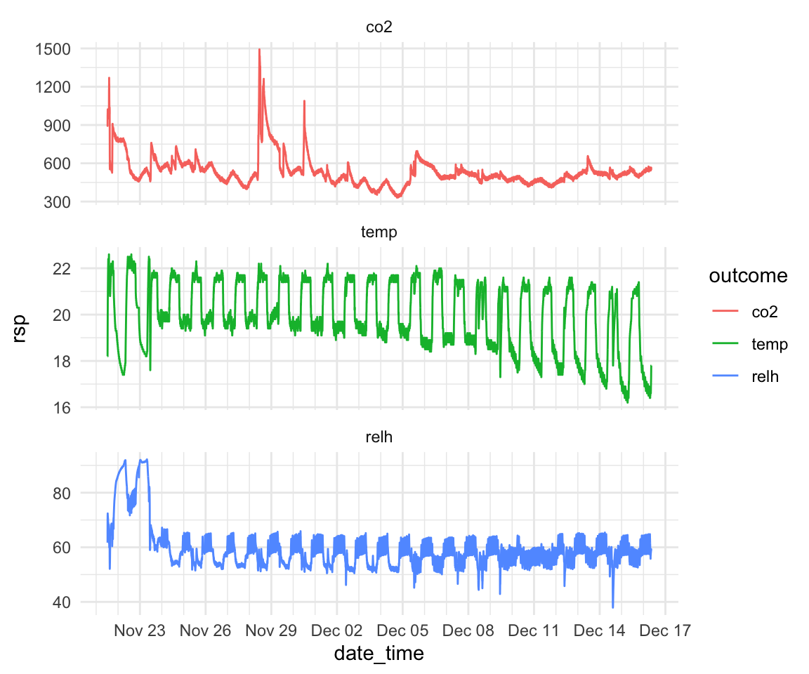
ggplot(log_plot_sum_tbl, aes(date, mean)) +
theme_minimal() +
geom_line(aes(color = outcome)) +
geom_ribbon(aes(ymin = mean - sd,
ymax = mean + sd,
fill = outcome), alpha = .2) +
facet_wrap(~ outcome, scales = "free_y", nrow = 3) +
scale_x_date(date_labels = "%b %d", date_breaks = "3 day",
date_minor_breaks = "1 day") +
theme(legend.position = "none") +
labs(x = "Datum", y = "")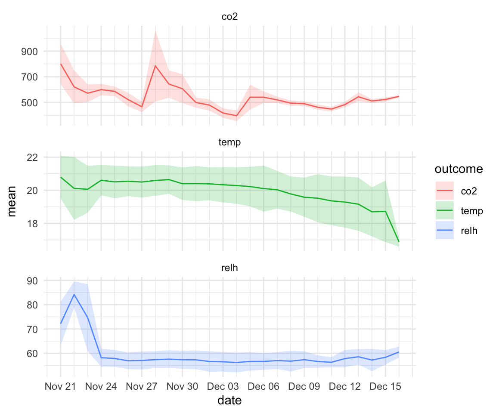
log_plot_filter_tbl <- log_plot_tbl %>%
filter(time == "12:00:00")ggplot(log_plot_filter_tbl, aes(date, rsp, color = outcome)) +
theme_minimal() +
geom_line() +
facet_wrap(~ outcome, scales = "free_y", nrow = 3) +
scale_x_date(date_labels = "%b %d", date_breaks = "3 day",
date_minor_breaks = "1 day") +
theme(legend.position = "none") +
labs(x = "Datum", y = "")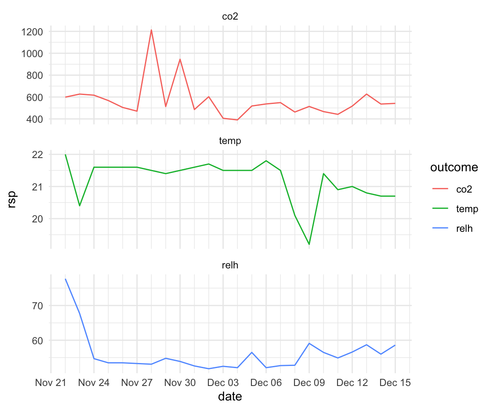